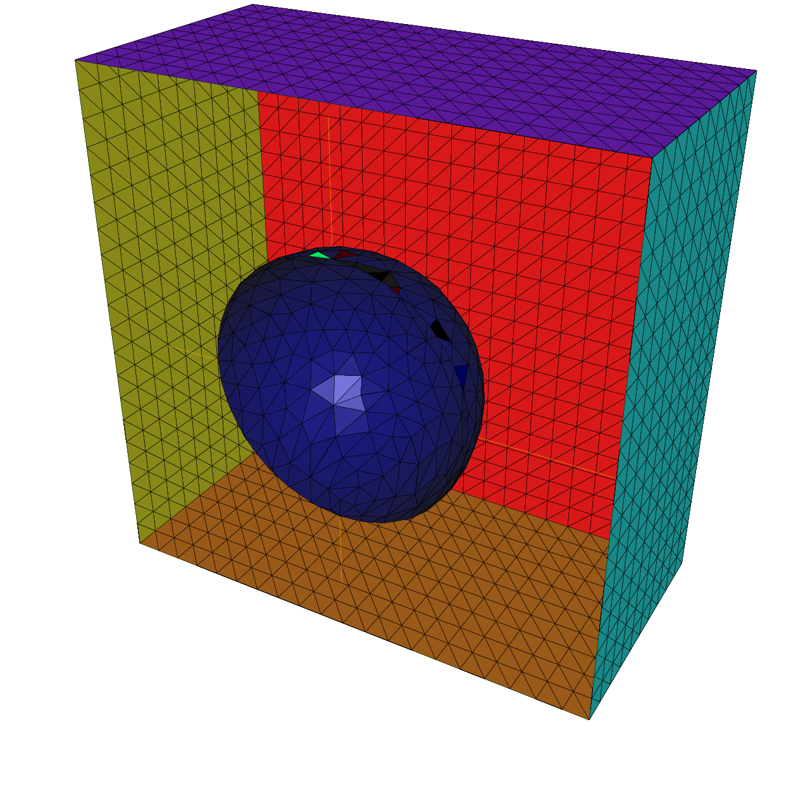

Mesh Generation¶
Let us begin with the two important keywords: border and buildmesh.
Square¶
The command square triangulates the unit square.
The following generates a \(4 \times 5\) grid in the unit square \([0,1]^2\). The labels of the boundaries are shown in Fig. 1.
mesh Th = square(4, 5);
Fig. 1 Boundary labels of the mesh by square(10,10)
To construct a \(n\times m\) grid in the rectangle \([x_0,x_1]\times [y_0,y_1]\), proceed as follows:
real x0 = 1.2;
real x1 = 1.8;
real y0 = 0;
real y1 = 1;
int n = 5;
real m = 20;
mesh Th = square(n, m, [x0+(x1-x0)*x, y0+(y1-y0)*y]);
Note
Adding the named parameter flags=icase with icase:
- will produce a mesh where all quads are split with diagonal \(x-y=constant\)
- will produce Union Jack flag type of mesh
- will produce a mesh where all quads are split with diagonal \(x+y=constant\)
- same as in case 0, except two corners where the triangles are the same as case 2 to avoid having 3 vertices on the boundary
- same as in case 2, except two corners where the triangles are the same as case 0 to avoid having 3 vertices on the boundary
mesh Th = square(n, m, [x0+(x1-x0)*x, y0+(y1-y0)*y], flags=icase);
Note
Adding the named parameter label=labs will
change the 4 default label numbers to labs[i-1], for
example int[int] labs=[11, 12, 13, 14], and adding the
named parameter region=10 will change the region number
to \(10\), for instance (v 3.8).
To see all of these flags at work, check [SquareMesh.edp](./scripts/MeshGeneration/SquareMesh.edp):
for (int i = 0; i < 5; ++i){
int[int] labs = [11, 12, 13, 14];
mesh Th = square(3, 3, flags=i, label=labs, region=10);
plot(Th, wait=1, cmm="square flags = "+i );
}
Border¶
Boundaries are defined piecewise by parametrized curves. The pieces can only intersect at their endpoints, but it is possible to join more than two endpoints. This can be used to structure the mesh if an area touches a border and create new regions by dividing larger ones:
int upper = 1;
int others = 2;
int inner = 3;
border C01(t=0, 1){x=0; y=-1+t; label=upper;}
border C02(t=0, 1){x=1.5-1.5*t; y=-1; label=upper;}
border C03(t=0, 1){x=1.5; y=-t; label=upper;}
border C04(t=0, 1){x=1+0.5*t; y=0; label=others;}
border C05(t=0, 1){x=0.5+0.5*t; y=0; label=others;}
border C06(t=0, 1){x=0.5*t; y=0; label=others;}
border C11(t=0, 1){x=0.5; y=-0.5*t; label=inner;}
border C12(t=0, 1){x=0.5+0.5*t; y=-0.5; label=inner;}
border C13(t=0, 1){x=1; y=-0.5+0.5*t; label=inner;}
int n = 10;
plot(C01(-n) + C02(-n) + C03(-n) + C04(-n) + C05(-n)
+ C06(-n) + C11(n) + C12(n) + C13(n), wait=true);
mesh Th = buildmesh(C01(-n) + C02(-n) + C03(-n) + C04(-n) + C05(-n)
+ C06(-n) + C11(n) + C12(n) + C13(n));
plot(Th, wait=true);
cout << "Part 1 has region number " << Th(0.75, -0.25).region << endl;
cout << "Part 2 has redion number " << Th(0.25, -0.25).region << endl;
Borders and mesh are respectively shown in Fig. 2 and Fig. Fig. 3.
Fig. 2 Multiple border ends intersect

Fig. 3 Generated mesh
Triangulation keywords assume that the domain is defined as being on the left (resp right) of its oriented parameterized boundary
To check the orientation plot \(t\mapsto (\varphi_x(t),\varphi_y(t)),\, t_0\le t\le t_1\). If it is as in Fig. 4, then the domain lies on the shaded area, otherwise it lies on the opposite side.
Fig. 4 Orientation of the boundary defined by \((\phi_x(t),\phi_y(t))\)
The general expression to define a triangulation with buildmesh is
mesh Mesh_Name = buildmesh(Gamma1(m1)+...+GammaJ(mj), OptionalParameter);
where \(m_j\) are positive or negative numbers to indicate how many vertices should be on \(\Gamma_j,\, \Gamma=\cup_{j=1}^J \Gamma_J\), and the optional parameter (see also References), separated with a comma, can be:
nbvx= int, to set the maximum number of vertices in the mesh.fixedborder= bool, to say if the mesh generator can change the boundary mesh or not (by default the boundary mesh can change; beware that with periodic boundary conditions (see. Finite Element), it can be dangerous.
The orientation of boundaries can be changed by changing the sign of \(m_j\).
The following example shows how to change the orientation. The example generates the unit disk with a small circular hole, and assigns “1” to the unit disk (“2” to the circle inside). The boundary label must be non-zero, but it can also be omitted.
border a(t=0, 2*pi){x=cos(t); y=sin(t); label=1;}
border b(t=0, 2*pi){x=0.3+0.3*cos(t); y=0.3*sin(t); label=2;}
plot(a(50) + b(30)); //to see a plot of the border mesh
mesh Thwithouthole = buildmesh(a(50) + b(30));
mesh Thwithhole = buildmesh(a(50) + b(-30));
plot(Thwithouthole, ps="Thwithouthole.eps");
plot(Thwithhole, ps="Thwithhole.eps");
Note
Notice that the orientation is changed by b(-30) in the 5th line. In the 7th line, ps="fileName" is used to generate a postscript file with identification shown on the figure.

Fig. 5 Mesh without hole
Fig. 6 Mesh with hole
Note
Borders are evaluated only at the time plot or buildmesh is called so the global variables are defined at this time. In this case, since \(r\) is changed between the two border calls, the following code will not work because the first border will be computed with r=0.3:
real r=1;
border a(t=0, 2*pi){x=r*cos(t); y=r*sin(t); label=1;}
r=0.3;
border b(t=0, 2*pi){x=r*cos(t); y=r*sin(t); label=1;}
mesh Thwithhole = buildmesh(a(50) + b(-30)); // bug (a trap) because
// the two circles have the same radius = :math:`0.3`
Multi-Border¶
Sometimes it can be useful to make an array of the border, but unfortunately it is incompatible with the FreeFem++ syntax. To bypass this problem, if the number of segments of the discretization \(n\) is an array, we make an implicit loop on all of the values of the array, and the index variable \(i\) of the loop is defined after the parameter definition, like in :freefem`border a(t=0, 2*pi; i)` …
A first very small example:
border a(t=0, 2*pi; i){x=(i+1)*cos(t); y=(i+1)*sin(t); label=1;}
int[int] nn = [10, 20, 30];
plot(a(nn)); //plot 3 circles with 10, 20, 30 points
And a more complex example to define a square with small circles:
real[int] xx = [0, 1, 1, 0],
yy = [0, 0, 1, 1];
//radius, center of the 4 circles
real[int] RC = [0.1, 0.05, 0.05, 0.1],
XC = [0.2, 0.8, 0.2, 0.8],
YC = [0.2, 0.8, 0.8, 0.2];
int[int] NC = [-10,-11,-12,13]; //list number of :math:`\pm` segments of the 4 circles borders
border bb(t=0, 1; i)
{
// i is the index variable of the multi border loop
int ii = (i+1)%4;
real t1 = 1-t;
x = xx[i]*t1 + xx[ii]*t;
y = yy[i]*t1 + yy[ii]*t;
label = 0;
}
border cc(t=0, 2*pi; i)
{
x = RC[i]*cos(t) + XC[i];
y = RC[i]*sin(t) + YC[i];
label = i + 1;
}
int[int] nn = [4, 4, 5, 7]; //4 border, with 4, 4, 5, 7 segment respectively
plot(bb(nn), cc(NC), wait=1);
mesh th = buildmesh(bb(nn) + cc(NC));
plot(th, wait=1);
Data Structures and Read/Write Statements for a Mesh¶
Users who want to read a triangulation made elsewhere should see the structure of the file generated below:
border C(t=0, 2*pi){x=cos(t); y=sin(t);}
mesh Th = buildmesh(C(10));
savemesh(Th, "mesh.msh");
The mesh is shown on Fig. 7.
The information about :freefem`Th` are saved in the file mesh.msh whose structure is shown on Tab. 1.
There, \(n_v\) denotes the number of vertices, \(n_t\) the number of triangles and \(n_s\) the number of edges on boundary.
For each vertex \(q^i,\, i=1,\cdots,n_v\), denoted by \((q^i_x,q^i_y)\) the \(x\)-coordinate and \(y\)-coordinate.
Each triangle \(T_k, k=1,\cdots,n_t\) has three vertices \(q^{k_1},\, q^{k_2},\,q^{k_3}\) that are oriented counter-clockwise.
The boundary consists of 10 lines \(L_i,\, i=1,\cdots,10\) whose end points are \(q^{i_1},\, q^{i_2}\).

Fig. 7 Mesh by :freefem`buildmesh(C(10))`
In the Fig. 7, we have the following. \(n_v=14, n_t=16, n_s=10\) \(q^1=(-0.309016994375, 0.951056516295)\) \(\vdots\quad \vdots\quad \vdots\) \(q^{14}=(-0.309016994375, -0.951056516295)\) The vertices of \(T_1\) are \(q^9, q^{12},\, q^{10}\). \(\vdots\quad \vdots\quad \vdots\) The vertices of \(T_{16}\) are \(q^9, q^{10}, q^{6}\). The edge of the 1st side \(L_1\) are \(q^6, q^5\).\(\vdots\quad \vdots\quad \vdots\) The edge of the 10th side \(L_{10}\) are \(q^{10}, q^6\).
In FreeFem++ there are many mesh file formats available for communication with other tools such as emc2, modulef, … (see Mesh format chapter ).
Todo
todo
The extension of a file implies its format. More details can be found on the file format .msh in the article by F. Hecht “bamg : a bidimensional anisotropic mesh generator” Hecht1998.
A mesh file can be read into FreeFem++ except that the names of the borders are lost and only their reference numbers are kept.
So these borders have to be referenced by the number which corresponds to their order of appearance in the program, unless this number is overwritten by the keyword label. Here are some examples:
border floor(t=0, 1){x=t; y=0; label=1;}
border right(t=0, 1){x=1; y=t; label=5;}
border ceiling(t=1, 0){x=t; y=1; label=5;}
border left(t=1, 0){x=0; y=t; label=5;}
int n = 10;
mesh th = buildmesh(floor(n) + right(n) + ceiling(n) + left(n));
savemesh(th, "toto.am_fmt"); //"formatted Marrocco" format
savemesh(th, "toto.Th"); //"bamg"-type mesh
savemesh(th, "toto.msh"); //freefem format
savemesh(th, "toto.nopo"); //modulef format
mesh th2 = readmesh("toto.msh"); //read the mesh
// Parameters
int n = 10;
// Mesh
border floor(t=0, 1){x=t; y=0; label=1;};
border right(t=0, 1){x=1; y=t; label=5;};
border ceiling(t=1, 0){x=t; y=1; label=5;};
border left(t=1, 0){x=0; y=t; label=5;};
mesh th = buildmesh(floor(n) + right(n) + ceiling(n) + left(n));
//save mesh in different formats
savemesh(th, "toto.am_fmt"); // format "formated Marrocco"
savemesh(th, "toto.Th"); // format database db mesh "bamg"
savemesh(th, "toto.msh"); // format freefem
savemesh(th, "toto.nopo"); // modulef format
// Fespace
fespace femp1(th, P1);
femp1 f = sin(x)*cos(y);
femp1 g;
//save the fespace function in a file
{
ofstream file("f.txt");
file << f[] << endl;
} //the file is automatically closed at the end of the block
//read a file and put it in a fespace function
{
ifstream file("f.txt");
file >> g[] ;
}//the file is equally automatically closed
// Plot
plot(g);
// Mesh 2
//read the mesh for freefem format saved mesh
mesh th2 = readmesh("toto.msh");
// Fespace 2
fespace Vh2(th2, P1);
Vh2 u, v;
// Problem
//solve:
// $u + \Delta u = g$ in $\Omega $
// $u=0$ on $\Gamma_1$
// $\frac{\partial u }{\partial n} = g$ on $\Gamma_2$
solve Problem(u, v)
= int2d(th2)(
u*v
- dx(u)*dx(v)
- dy(u)*dy(v)
)
+ int2d(th2)(
- g*v
)
+ int1d(th2, 5)(
g*v
)
+ on(1, u=0)
;
// Plot
plot(th2, u);
Mesh Connectivity and data¶
The following example explains methods to obtain mesh information.
// Mesh
mesh Th = square(2, 2);
cout << "// Get data of the mesh" << endl;
{
int NbTriangles = Th.nt;
real MeshArea = Th.measure;
real BorderLenght = Th.bordermeasure;
cout << "Number of triangle(s) = " << NbTriangles << endl;
cout << "Mesh area = " << MeshArea << endl;
cout << "Border length = " << BorderLenght << endl;
// Th(i) return the vextex i of Th
// Th[k] return the triangle k of Th
// Th[k][i] return the vertex i of the triangle k of Th
for (int i = 0; i < NbTriangles; i++)
for (int j = 0; j < 3; j++)
cout << i << " " << j << " - Th[i][j] = " << Th[i][j]
<< ", x = " << Th[i][j].x
<< ", y= " << Th[i][j].y
<< ", label=" << Th[i][j].label << endl;
}
cout << "// Hack to get vertex coordinates" << endl;
{
fespace femp1(Th, P1);
femp1 Thx=x,Thy=y;
int NbVertices = Th.nv;
cout << "Number of vertices = " << NbVertices << endl;
for (int i = 0; i < NbVertices; i++)
cout << "Th(" << i << ") : " << Th(i).x << " " << Th(i).y << " " << Th(i).label
<< endl << "\told method: " << Thx[][i] << " " << Thy[][i] << endl;
}
cout << "// Method to find information of point (0.55,0.6)" << endl;
{
int TNumber = Th(0.55, 0.6).nuTriangle; //the triangle number
int RLabel = Th(0.55, 0.6).region; //the region label
cout << "Triangle number in point (0.55, 0.6): " << TNumber << endl;
cout << "Region label in point (0.55, 0.6): " << RLabel << endl;
}
cout << "// Information of triangle" << endl;
{
int TNumber = Th(0.55, 0.6).nuTriangle;
real TArea = Th[TNumber].area; //triangle area
real TRegion = Th[TNumber].region; //triangle region
real TLabel = Th[TNumber].label; //triangle label, same as region for triangles
cout << "Area of triangle " << TNumber << ": " << TArea << endl;
cout << "Region of triangle " << TNumber << ": " << TRegion << endl;
cout << "Label of triangle " << TNumber << ": " << TLabel << endl;
}
cout << "// Hack to get a triangle containing point x, y or region number (old method)" << endl;
{
fespace femp0(Th, P0);
femp0 TNumbers; //a P0 function to get triangle numbering
for (int i = 0; i < Th.nt; i++)
TNumbers[][i] = i;
femp0 RNumbers = region; //a P0 function to get the region number
int TNumber = TNumbers(0.55, 0.6); // Number of the triangle containing (0.55, 0,6)
int RNumber = RNumbers(0.55, 0.6); // Number of the region containing (0.55, 0,6)
cout << "Point (0.55,0,6) :" << endl;
cout << "\tTriangle number = " << TNumber << endl;
cout << "\tRegion number = " << RNumber << endl;
}
cout << "// New method to get boundary information and mesh adjacent" << endl;
{
int k = 0;
int l=1;
int e=1;
// Number of boundary elements
int NbBoundaryElements = Th.nbe;
cout << "Number of boundary element = " << NbBoundaryElements << endl;
// Boundary element k in {0, ..., Th.nbe}
int BoundaryElement = Th.be(k);
cout << "Boundary element " << k << " = " << BoundaryElement << endl;
// Vertice l in {0, 1} of boundary element k
int Vertex = Th.be(k)[l];
cout << "Vertex " << l << " of boundary element " << k << " = " << Vertex << endl;
// Triangle containg the boundary element k
int Triangle = Th.be(k).Element;
cout << "Triangle containing the boundary element " << k << " = " << Triangle << endl;
// Triangle egde nubmer containing the boundary element k
int Edge = Th.be(k).whoinElement;
cout << "Triangle edge number containing the boundary element " << k << " = " << Edge << endl;
// Adjacent triangle of the triangle k by edge e
int Adjacent = Th[k].adj(e); //The value of e is changed to the corresponding edge in the adjacent triangle
cout << "Adjacent triangle of the triangle " << k << " by edge " << e << " = " << Adjacent << endl;
cout << "\tCorresponding edge = " << e << endl;
// If there is no adjacent triangle by edge e, the same triangle is returned
//Th[k] == Th[k].adj(e)
// Else a different triangle is returned
//Th[k] != Th[k].adj(e)
}
cout << "// Print mesh connectivity " << endl;
{
int NbTriangles = Th.nt;
for (int k = 0; k < NbTriangles; k++)
cout << k << " : " << int(Th[k][0]) << " " << int(Th[k][1])
<< " " << int(Th[k][2])
<< ", label " << Th[k].label << endl;
for (int k = 0; k < NbTriangles; k++)
for (int e = 0, ee; e < 3; e++)
//set ee to e, and ee is change by method adj,
cout << k << " " << e << " <=> " << int(Th[k].adj((ee=e))) << " " << ee
<< ", adj: " << (Th[k].adj((ee=e)) != Th[k]) << endl;
int NbBoundaryElements = Th.nbe;
for (int k = 0; k < NbBoundaryElements; k++)
cout << k << " : " << Th.be(k)[0] << " " << Th.be(k)[1]
<< " , label " << Th.be(k).label
<< ", triangle " << int(Th.be(k).Element)
<< " " << Th.be(k).whoinElement << endl;
real[int] bb(4);
boundingbox(Th, bb);
// bb[0] = xmin, bb[1] = xmax, bb[2] = ymin, bb[3] =ymax
cout << "boundingbox:" << endl;
cout << "xmin = " << bb[0]
<< ", xmax = " << bb[1]
<< ", ymin = " << bb[2]
<< ", ymax = " << bb[3] << endl;
}
The output is:
// Get data of the mesh
Number of triangle = 8
Mesh area = 1
Border length = 4
0 0 - Th[i][j] = 0, x = 0, y= 0, label=4
0 1 - Th[i][j] = 1, x = 0.5, y= 0, label=1
0 2 - Th[i][j] = 4, x = 0.5, y= 0.5, label=0
1 0 - Th[i][j] = 0, x = 0, y= 0, label=4
1 1 - Th[i][j] = 4, x = 0.5, y= 0.5, label=0
1 2 - Th[i][j] = 3, x = 0, y= 0.5, label=4
2 0 - Th[i][j] = 1, x = 0.5, y= 0, label=1
2 1 - Th[i][j] = 2, x = 1, y= 0, label=2
2 2 - Th[i][j] = 5, x = 1, y= 0.5, label=2
3 0 - Th[i][j] = 1, x = 0.5, y= 0, label=1
3 1 - Th[i][j] = 5, x = 1, y= 0.5, label=2
3 2 - Th[i][j] = 4, x = 0.5, y= 0.5, label=0
4 0 - Th[i][j] = 3, x = 0, y= 0.5, label=4
4 1 - Th[i][j] = 4, x = 0.5, y= 0.5, label=0
4 2 - Th[i][j] = 7, x = 0.5, y= 1, label=3
5 0 - Th[i][j] = 3, x = 0, y= 0.5, label=4
5 1 - Th[i][j] = 7, x = 0.5, y= 1, label=3
5 2 - Th[i][j] = 6, x = 0, y= 1, label=4
6 0 - Th[i][j] = 4, x = 0.5, y= 0.5, label=0
6 1 - Th[i][j] = 5, x = 1, y= 0.5, label=2
6 2 - Th[i][j] = 8, x = 1, y= 1, label=3
7 0 - Th[i][j] = 4, x = 0.5, y= 0.5, label=0
7 1 - Th[i][j] = 8, x = 1, y= 1, label=3
7 2 - Th[i][j] = 7, x = 0.5, y= 1, label=3
// Hack to get vertex coordinates
Number of vertices = 9
Th(0) : 0 0 4
old method: 0 0
Th(1) : 0.5 0 1
old method: 0.5 0
Th(2) : 1 0 2
old method: 1 0
Th(3) : 0 0.5 4
old method: 0 0.5
Th(4) : 0.5 0.5 0
old method: 0.5 0.5
Th(5) : 1 0.5 2
old method: 1 0.5
Th(6) : 0 1 4
old method: 0 1
Th(7) : 0.5 1 3
old method: 0.5 1
Th(8) : 1 1 3
old method: 1 1
// Method to find the information of point (0.55,0.6)
Triangle number in point (0.55, 0.6): 7
Region label in point (0.55, 0.6): 0
// Information of a triangle
Area of triangle 7: 0.125
Region of triangle 7: 0
Label of triangle 7: 0
// Hack to get a triangle containing point x, y or region number (old method)
Point (0.55,0,6) :
Triangle number = 7
Region number = 0
// New method to get boundary information and mesh adjacent
Number of boundary element = 8
Boundary element 0 = 0
Vertex 1 of boundary element 0 = 1
Triangle containing the boundary element 0 = 0
Triangle edge number containing the boundary element 0 = 2
Adjacent triangle of the triangle 0 by edge 1 = 1
Corresponding edge = 2
// Print mesh connectivity
0 : 0 1 4, label 0
1 : 0 4 3, label 0
2 : 1 2 5, label 0
3 : 1 5 4, label 0
4 : 3 4 7, label 0
5 : 3 7 6, label 0
6 : 4 5 8, label 0
7 : 4 8 7, label 0
0 0 <=> 3 1, adj: 1
0 1 <=> 1 2, adj: 1
0 2 <=> 0 2, adj: 0
1 0 <=> 4 2, adj: 1
1 1 <=> 1 1, adj: 0
1 2 <=> 0 1, adj: 1
2 0 <=> 2 0, adj: 0
2 1 <=> 3 2, adj: 1
2 2 <=> 2 2, adj: 0
3 0 <=> 6 2, adj: 1
3 1 <=> 0 0, adj: 1
3 2 <=> 2 1, adj: 1
4 0 <=> 7 1, adj: 1
4 1 <=> 5 2, adj: 1
4 2 <=> 1 0, adj: 1
5 0 <=> 5 0, adj: 0
5 1 <=> 5 1, adj: 0
5 2 <=> 4 1, adj: 1
6 0 <=> 6 0, adj: 0
6 1 <=> 7 2, adj: 1
6 2 <=> 3 0, adj: 1
7 0 <=> 7 0, adj: 0
7 1 <=> 4 0, adj: 1
7 2 <=> 6 1, adj: 1
0 : 0 1 , label 1, triangle 0 2
1 : 1 2 , label 1, triangle 2 2
2 : 2 5 , label 2, triangle 2 0
3 : 5 8 , label 2, triangle 6 0
4 : 6 7 , label 3, triangle 5 0
5 : 7 8 , label 3, triangle 7 0
6 : 0 3 , label 4, triangle 1 1
7 : 3 6 , label 4, triangle 5 1
boundingbox:
xmin = 0, xmax = 1, ymin = 0, ymax = 1
The real characteristic function of a mesh Th is chi(Th) in 2D and 3D where:
chi(Th)(P)=1 if \(P\in Th\)
chi(Th)(P)=0 if \(P\not\in Th\)
The keyword “triangulate”¶
FreeFem++ is able to build a triangulation from a set of points. This triangulation is a Delaunay mesh of the convex hull of the set of points. It can be useful to build a mesh from a table function.
The coordinates of the points and the value of the table function are
defined separately with rows of the form: x y f(x,y) in a
file such as:
0.51387 0.175741 0.636237
0.308652 0.534534 0.746765
0.947628 0.171736 0.899823
0.702231 0.226431 0.800819
0.494773 0.12472 0.580623
0.0838988 0.389647 0.456045
...............
Fig. 8 Delaunay mesh of the convex hull of point set in file xy

Fig. 9 Isolvalue of table function
The third column of each line is left untouched by the triangulate command. But you can use this third value to define a table function with rows of the form: :freefem`x y f(x,y)`.
The following example shows how to make a mesh from the file xyf with the format stated just above. The command :freefem`triangulate` only uses the 1st and 2nd columns.
// Build the Delaunay mesh of the convex hull
mesh Thxy=triangulate("xyf"); //points are defined by the first 2 columns of file `xyf`
// Plot the created mesh
plot(Thxy);
// Fespace
fespace Vhxy(Thxy, P1);
Vhxy fxy;
// Reading the 3rd column to define the function fxy
{
ifstream file("xyf");
real xx, yy;
for(int i = 0; i < fxy.n; i++)
file >> xx >> yy >> fxy[][i]; //to read third row only.
//xx and yy are just skipped
}
// Plot
plot(fxy);
One new way to build a mesh is to have two arrays: one for the \(x\) values and the other for the \(y\) values.
//set two arrays for the x's and y's
Vhxy xx=x, yy=y;
//build the mesh
mesh Th = triangulate(xx[], yy[]);
Boundary FEM Spaces Built as Empty Meshes¶
To define a Finite Element space on a boundary, we came up with the idea of a mesh with no internal points (called empty mesh). It can be useful to handle Lagrange multipliers in mixed and mortar methods.
So the function emptymesh removes all the internal points
of a mesh except points on internal boundaries.
{
border a(t=0, 2*pi){x=cos(t); y=sin(t); label=1;}
mesh Th = buildmesh(a(20));
Th = emptymesh(Th);
plot(Th);
}
It is also possible to build an empty mesh of a pseudo subregion with
emptymesh(Th, ssd) using the set of edges from the mesh
Th; an edge \(e\) is in this set when, with the two
adjacent triangles \(e =t1\cap t2\) and \(ssd[T1] \neq ssd[T2]\)
where \(ssd\) refers to the pseudo region numbering of triangles,
they are stored in the int[int] array of size “the number
of triangles”.
{
mesh Th = square(10, 10);
int[int] ssd(Th.nt);
//build the pseudo region numbering
for(int i = 0; i < ssd.n; i++){
int iq = i/2; //because 2 triangles per quad
int ix = iq%10;
int iy = iq/10;
ssd[i] = 1 + (ix>=5) + (iy>=5)*2;
}
//build emtpy with all edges $e=T1 \cap T2$ and $ssd[T1] \neq ssd[T2]$
Th = emptymesh(Th, ssd);
//plot
plot(Th);
savemesh(Th, "emptymesh.msh");
}

Fig. 10 The empty mesh with boundary
Fig. 11 An empty mesh defined from a pseudo region numbering of triangle
Remeshing¶
Movemesh¶
Meshes can be translated, rotated, and deformed by
movemesh; this is useful for elasticity to watch the
deformation due to the displacement
\(\mathbf{\Phi}(x,y)=(\Phi_1(x,y),\Phi_2(x,y))\) of shape.
It is also useful to handle free boundary problems or optimal shape problems.
If \(\Omega\) is triangulated as \(T_h(\Omega)\), and \(\mathbf{\Phi}\) is a displacement vector then \(\mathbf{\Phi}(T_h)\) is obtained by
mesh Th = movemesh(Th,[Phi1, Phi2]);
Sometimes the transformed mesh is invalid because some triangles have
flipped over (meaning it now has a negative area). To spot such
problems, one may check the minimum triangle area in the transformed
mesh with checkmovemesh before any real transformation.
For example: .. math:
\Phi_1(x,y) &=& x+k*\sin(y*\pi)/10)\\
\Phi_2(x,y) &=& y+k*\cos(y\pi)/10)
for a big number \(k>1\).
verbosity = 4;
// Parameters
real coef = 1;
// Mesh
border a(t=0, 1){x=t; y=0; label=1;};
border b(t=0, 0.5){x=1; y=t; label=1;};
border c(t=0, 0.5){x=1-t; y=0.5; label=1;};
border d(t=0.5, 1){x=0.5; y=t; label=1;};
border e(t=0.5, 1){x=1-t; y=1; label=1;};
border f(t=0, 1){x=0; y=1-t; label=1;};
mesh Th = buildmesh(a(6) + b(4) + c(4) + d(4) + e(4) + f(6));
plot(Th, wait=true, fill=true, ps="Lshape.eps");
// Function
func uu = sin(y*pi)/10;
func vv = cos(x*pi)/10;
// Checkmovemesh
real minT0 = checkmovemesh(Th, [x, y]); //return the min triangle area
while(1){ // find a correct move mesh
real minT = checkmovemesh(Th, [x+coef*uu, y+coef*vv]);
if (minT > minT0/5) break; //if big enough
coef /= 1.5;
}
// Movemesh
Th = movemesh(Th, [x+coef*uu, y+coef*vv]);
plot(Th, wait=true, fill=true, ps="MovedMesh.eps");

Fig. 12 L-shape
Fig. 13 Moved L-shape
Note
Consider a function \(u\) defined on a mesh
Th. A statement like Th=movemesh(Th...)
does not change \(u\) and so the old mesh still exists. It will be
destroyed when no function uses it. A statement like \(u=u\)
redefines \(u\) on the new mesh Th with interpolation
and therefore destroys the old Th, if \(u\) was the
only function using it.
Now, we give an example of moving a mesh with a Lagrangian function \(u\) defined on the moving mesh.
// Parameters
int nn = 10;
real dt = 0.1;
// Mesh
mesh Th = square(nn, nn);
// Fespace
fespace Vh(Th, P1);
Vh u=y;
// Loop
real t=0;
for (int i = 0; i < 4; i++){
t = i*dt;
Vh f=x*t;
real minarea = checkmovemesh(Th, [x, y+f]);
if (minarea > 0) //movemesh will be ok
Th = movemesh(Th, [x, y+f]);
cout << " Min area = " << minarea << endl;
real[int] tmp(u[].n);
tmp = u[]; //save the value
u = 0;//to change the FEspace and mesh associated with u
u[] = tmp;//set the value of u without any mesh update
plot(Th, u, wait=true);
}
// In this program, since u is only defined on the last mesh, all the
// previous meshes are deleted from memory.
Regular Triangulation: hTriangle¶
For a set \(S\), we define the diameter of \(S\) by
The sequence \(\{\mathcal{T}_h\}_{h\rightarrow 0}\) of \(\Omega\) is called regular if they satisfy the following:
- \(\lim_{h\rightarrow 0}\max\{\textrm{diam}(T_k)|\; T_k\in \mathcal{T}_h\}=0\)
- There is a number \(\sigma>0\) independent of \(h\) such that \(\frac{\rho(T_k)}{\textrm{diam}(T_k)}\ge \sigma\quad \textrm{for all }T_k\in \mathcal{T}_h\) where \(\rho(T_k)\) are the diameter of the inscribed circle of \(T_k\).
We put \(h(\mathcal{T}_h)=\max\{\textrm{diam}(T_k)|\; T_k\in \mathcal{T}_h\}\), which is obtained by
mesh Th = ......;
fespace Ph(Th, P0);
Ph h = hTriangle;
cout << "size of mesh = " << h[].max << endl;
Adaptmesh¶
The function
sharply varies in value and the initial mesh given by one of the commands in the Mesh Generation section cannot reflect its sharp variations.
// Parameters
real eps = 0.0001;
real h = 1;
real hmin = 0.05;
func f = 10.0*x^3 + y^3 + h*atan2(eps, sin(5.0*y)-2.0*x);
// Mesh
mesh Th = square(5, 5, [-1+2*x, -1+2*y]);
// Fespace
fespace Vh(Th,P1);
Vh fh = f;
plot(fh);
// Adaptmesh
for (int i = 0; i < 2; i++){
Th = adaptmesh(Th, fh);
fh = f; //old mesh is deleted
plot(Th, fh, wait=true);
}
Fig. 14 3D graphs for the initial mesh and 1st and 2nd mesh adaptations
FreeFem++ uses a variable metric/Delaunay automatic meshing algorithm.
The command:
mesh ATh = adaptmesh(Th, f);
create the new mesh ATh adapted to the Hessian
of a function (formula or FE-function).
Mesh adaptation is a very powerful tool when the solution of a problem varies locally and sharply.
Here we solve the Poisson’s problem, when \(f=1\) and \(\Omega\) is a L-shape domain.
| Fig. 15: L-shape domain and its boundary name | Fig. 16: Final solution after 4-times adaptation |
|---|---|
 |
 |
!!!example “Example” The solution has the singularity \(r^{3/2},\, r=|x-\gamma|\) at the point \(\gamma\) of the intersection of two lines \(bc\) and \(bd\) (see Fig. 15).
// Parameters
real error = 0.1;
// Mesh
border ba(t=0, 1){x=t; y=0; label=1;}
border bb(t=0, 0.5){x=1; y=t; label=1;}
border bc(t=0, 0.5){x=1-t; y=0.5; label=1;}
border bd(t=0.5, 1){x=0.5; y=t; label=1;}
border be(t=0.5, 1){x=1-t; y=1; label=1;}
border bf(t=0, 1){x=0; y=1-t; label=1;}
mesh Th = buildmesh(ba(6) + bb(4) + bc(4) + bd(4) + be(4) + bf(6));
// Fespace
fespace Vh(Th, P1);
Vh u, v;
// Function
func f = 1;
// Problem
problem Poisson(u, v, solver=CG, eps=1.e-6)
= int2d(Th)(
dx(u)*dx(v)
+ dy(u)*dy(v)
)
- int2d(Th)(
f*v
)
+ on(1, u=0);
// Adaptmesh loop
for (int i = 0; i < 4; i++){
Poisson;
Th = adaptmesh(Th, u, err=error);
error = error/2;
}
// Plot
plot(u);
To speed up the adaptation, the default parameter err of
adaptmesh is changed by hand; it specifies the required
precision, so as to make the new mesh finer or coarser.
The problem is coercive and symmetric, so the linear system can be
solved with the conjugate gradient method (parameter
solver=CG) with the stopping criteria on the residual,
here eps=1.e-6).
By adaptmesh, the slope of the final solution is
correctly computed near the point of intersection of \(bc\) and
\(bd\) as in Fig. 16.
This method is described in detail in Hecht1998. It has a number of default parameters which can be modified.
If f1,f2 are functions and thold, Thnew
are meshes:
Thnew = adaptmesh(Thold, f1 ... );
Thnew = adaptmesh(Thold, f1,f2 ... ]);
Thnew = adaptmesh(Thold, [f1,f2] ... );
The additional parameters of adaptmesh are:
See Reference part for more inforamtions
hmin=Minimum edge size. Its default is related to the size of the domain to be meshed and the precision of the mesh generator.hmax=Maximum edge size. It defaults to the diameter of the domain to be meshed.err=\(P_1\) interpolation error level (0.01 is the default).errg=Relative geometrical error. By default this error is 0.01, and in any case it must be lower than \(1/\sqrt{2}\).
Meshes created with this option may have some edges smaller than the-hmindue to geometrical constraints.
nbvx=Maximum number of vertices generated by the mesh generator (9000 is the default).nbsmooth=number of iterations of the smoothing procedure (5 is the default).nbjacoby=number of iterations in a smoothing procedure during the metric construction, 0 means no smoothing, 6 is the default.ratio=ratio for a prescribed smoothing on the metric.
If the value is 0 or less than 1.1 no smoothing is done on the metric. 1.8 is the default. Ifratio > 1.1, the speed of mesh size variations is bounded by \(log(\mathtt{ratio})\). .. note:: Asratiogets closer to 1, the number of generated vertices increases. This may be useful to control the thickness of refined regions near shocks or boundary layers.
omega=relaxation parameter for the smoothing procedure. 1.0 is the default.iso=If true, forces the metric to be isotropic.falseis the default.abserror=If false, the metric is evaluated using the
criteria of equi-repartion of relative error.
falseis the default. In this case the metric is defined by .. math:\mathcal{M} = \left({1\over\mathtt{err}\,\, \mathtt{coef}^2} \quad { |\mathcal{H}| \over max(\mathtt{CutOff},|\eta|)}\right)^pOtherwise, the metric is evaluated using the criteria of equi-distribution of errors. In this case the metric is defined by .. math:
\mathcal{M} = \left({1\over \mathtt{err}\,\,\mathtt{coef}^2} \quad {|{\mathcal{H}|} \over {\sup(\eta)-\inf(\eta)}}\right)^p.\label{eq err abs}
cutoff=lower limit for the relative error evaluation. 1.0e-6 is the default.verbosity=informational messages level (can be chosen between 0 and \(\infty\)). Also changes the value of the global variable verbosity (obsolete).inquire=To inquire graphically about the mesh.falseis the default.splitpbedge=If true, splits all internal edges in half with two boundary vertices.trueis the default.maxsubdiv=Changes the metric such that the maximum subdivision of a background edge is bound byval. Always limited by 10, and 10 is also the default.rescaling=if true, the function, with respect to which the mesh is adapted, is rescaled to be between 0 and 1.trueis the default.keepbackvertices=if true, tries to keep as many vertices from the original mesh as possible.trueis the default.IsMetric=if true, the metric is defined explicitly.falseis the default. If the 3 functions \(m_{11}, m_{12}, m_{22}\) are given, they directly define a symmetric matrix field whose Hessian is computed to define a metric. If only one function is given, then it represents the isotropic mesh size at every point.For example, if the partial derivatives
fxx(\(=\partial^2 f/\partial x^2\)),fxy(\(=\partial^2 f/\partial x\partial y\)),fyy(\(=\partial^2 f/\partial y^2\)) are given, we can setTh = adaptmesh(Th, fxx, fxy, fyy, IsMetric=1, nbvx=10000, hmin=hmin);power=exponent power of the Hessian used to compute the metric. 1 is the default.thetamax=minimum corner angle in degrees. Default is \(10^\circ\) where the corner is \(ABC\) and the angle is the angle of the two vectors \({AB}, {BC}\), (\(0\) imply no corner, \(90\) imply perpendicular corner, …).splitin2=boolean value. If true, splits all triangles of the final mesh into 4 sub-triangles.metric=an array of 3 real arrays to set or get metric data information. The size of these three arrays must be the number of vertices. So ifm11,m12,m22are three P1 finite elements related to the mesh to adapt, you can write:metric=[m11[],m12[],m22[]](see fileconvect-apt.edpfor a full example)nomeshgeneration=If true, no adapted mesh is generated (useful to compute only a metric).periodic=Writingperiodic=[[4,y],[2,y],[1,x],[3,x]];builds an adapted periodic mesh. The sample builds a biperiodic mesh of a square. (see periodic finite element spaces, and see the Sphere example for a full example)
We can use the command adaptmesh to build a uniform mesh
with a constant mesh size. To build a mesh with a constant mesh size
equal to \(\frac{1}{30}\) try:
mesh Th=square(2, 2); //the initial mesh
plot(Th, wait=true, ps="square-0.eps");
Th = adaptmesh(Th, 1./30., IsMetric=1, nbvx=10000);
plot(Th, wait=true, ps="square-1.eps");
Th = adaptmesh(Th, 1./30., IsMetric=1, nbvx=10000); //More the one time du to
Th = adaptmesh(Th, 1./30., IsMetric=1, nbvx=10000); //Adaptation bound `maxsubdiv=`
plot(Th, wait=true, ps="square-2.eps");
Fig. 17: Initial mesh Fig. 18: First iteration Fig. 19: Last iteration


Trunc¶
Two operators have been introduced to remove triangles from a mesh or to
divide them. Operator trunc has two parameters:
label=sets the label number of new boundary item, one by default.split=sets the level \(n\) of triangle splitting. Each triangle is split in \(n\times n\), one by default.
To create the mesh Th3 where all triangles of a mesh
Th are split in \(3{\times}3\), just write:
mesh Th3 = trunc(Th, 1, split=3);
The following example construct all “trunced” meshes to the support of
the basic function of the space Vh
(cf. abs(u)>0), split all the triangles in
\(5{\times} 5\), and put a label number to \(2\) on a new
boundary.
// Mesh
mesh Th = square(3, 3);
// Fespace
fespace Vh(Th, P1);
Vh u=0;
// Loop on all degrees of freedom
int n=u.n;
for (int i = 0; i < n; i++){
u[][i] = 1; // The basis function i
plot(u, wait=true);
mesh Sh1 = trunc(Th, abs(u)>1.e-10, split=5, label=2);
plot(Th, Sh1, wait=true, ps="trunc"+i+".eps");
u[][i] = 0; // reset
}
| Fig. 20: mesh of support the function P1 number 0, split in \(5{\times}5\) | Fig. 21: Mesh of support the function P1 number 6, split in \(5{\times}5\) |
|---|---|
 |
 |
Splitmesh¶
Another way to split mesh triangles is to use splitmesh,
for example:
// Mesh
border a(t=0, 2*pi){x=cos(t); y=sin(t); label=1;}
mesh Th = buildmesh(a(20));
plot(Th, wait=true, ps="NotSplittedMesh.eps");
// Splitmesh
Th = splitmesh(Th, 1 + 5*(square(x-0.5) + y*y));
plot(Th, wait=true, ps="SplittedMesh.eps");
Meshing Examples¶
!!!example “Two rectangles touching by a side”
freefem border a(t=0, 1){x=t; y=0;}; border b(t=0, 1){x=1; y=t;}; border c(t=1, 0){x=t; y=1;}; border d(t=1, 0){x=0; y=t;}; border c1(t=0, 1){x=t; y=1;}; border e(t=0, 0.2){x=1; y=1+t;}; border f(t=1, 0){x=t; y=1.2;}; border g(t=0.2, 0){x=0; y=1+t;}; int n=1; mesh th = buildmesh(a(10*n) + b(10*n) + c(10*n) + d(10*n)); mesh TH = buildmesh(c1(10*n) + e(5*n) + f(10*n) + g(5*n)); plot(th, TH, ps="TouchSide.esp");
<center>
<!-- Review -->
|<a name="Fig24">Fig. 24</a>: Two rectangles touching by a side|
|:----:|
||
</center>
!!!example “NACA0012 Airfoil”
freefem border upper(t=0, 1){ x=t; y=0.17735*sqrt(t) - 0.075597*t - 0.212836*(t^2) + 0.17363*(t^3) - 0.06254*(t^4); } border lower(t=1, 0){ x = t; y=-(0.17735*sqrt(t) -0.075597*t - 0.212836*(t^2) + 0.17363*(t^3) - 0.06254*(t^4)); } border c(t=0, 2*pi){x=0.8*cos(t) + 0.5; y=0.8*sin(t);} mesh Th = buildmesh(c(30) + upper(35) + lower(35)); plot(Th, ps="NACA0012.eps", bw=true);
<center>
<table border=”1” class=”docutils”> <thead> <tr> <th align=”center”><a name=”Fig25”>Fig. 25</a>: NACA0012 Airfoil</th> </tr> </thead> <tbody> <tr> <td align=”center”><img alt=”NACA0012 Airfoil” src=”images/MeshGeneration_Example_NACA0012_2.png” /></td> </tr> </tbody> </table>
</center>
<table border=”1” class=”docutils”> <thead> <tr> <th align=”center”><a name=”Fig26”>Fig. 26</a>: Domain with Cardioid curve boundary</th> </tr> </thead> <tbody> <tr> <td align=”center”><img alt=”Cardiod” src=”images/MeshGeneration_Example_Cardioid1.png” /></td> </tr> </tbody> </table>
!!!example “Cassini Egg”
freefem border C(t=0, 2*pi) {x=(2*cos(2*t)+3)*cos(t); y=(2*cos(2*t)+3)*sin(t);} mesh Th = buildmesh(C(50)); plot(Th, ps="Cassini.eps", bw=true);
<center>
<table border=”1” class=”docutils”> <thead> <tr> <th align=”center”><a name=”Fig27”>Fig. 27</a>: Domain with Cassini Egg curve boundary</th> </tr> </thead> <tbody> <tr> <td align=”center”><img alt=”Cassini” src=”images/MeshGeneration_Example_Cardioid2.png” /></td> </tr> </tbody> </table>
</center>
!!!example “By cubic Bezier curve” ```freefem // A cubic Bezier curve connecting two points with two control points func real bzi(real p0, real p1, real q1, real q2, real t){ return p0(1-t)^3 + q13(1-t)2t + q23(1-t)t2 + p1t^3; }
real[int] p00 = [0, 1], p01 = [0, -1], q00 = [-2, 0.1], q01 = [-2, -0.5];
real[int] p11 = [1,-0.9], q10 = [0.1, -0.95], q11=[0.5, -1];
real[int] p21 = [2, 0.7], q20 = [3, -0.4], q21 = [4, 0.5];
real[int] q30 = [0.5, 1.1], q31 = [1.5, 1.2];
border G1(t=0, 1){
x=bzi(p00[0], p01[0], q00[0], q01[0], t);
y=bzi(p00[1], p01[1], q00[1], q01[1], t);
}
border G2(t=0, 1){
x=bzi(p01[0], p11[0], q10[0], q11[0], t);
y=bzi(p01[1], p11[1], q10[1], q11[1], t);
}
border G3(t=0, 1){
x=bzi(p11[0], p21[0], q20[0], q21[0], t);
y=bzi(p11[1], p21[1], q20[1], q21[1], t);
}
border G4(t=0, 1){
x=bzi(p21[0], p00[0], q30[0], q31[0], t);
y=bzi(p21[1], p00[1], q30[1], q31[1], t);
}
int m = 5;
mesh Th = buildmesh(G1(2*m) + G2(m) + G3(3*m) + G4(m));
plot(Th, ps="Bezier.eps", bw=true);
```
<center>
<table border=”1” class=”docutils”> <thead> <tr> <th align=”center”><a name=”Fig28”>Fig. 28</a>: Boundary drawn by Bezier curves</th> </tr> </thead> <tbody> <tr> <td align=”center”><img alt=”Bezier” src=”images/MeshGeneration_Example_Bezier.png” /></td> </tr> </tbody> </table>
</center>
!!!example “Section of Engine” ```freefem real a = 6., b = 1., c = 0.5;
border L1(t=0, 1){x=-a; y=1+b-2*(1+b)*t;}
border L2(t=0, 1){x=-a+2*a*t; y=-1-b*(x/a)*(x/a)*(3-2*abs(x)/a );}
border L3(t=0, 1){x=a; y=-1-b+(1+b)*t; }
border L4(t=0, 1){x=a-a*t; y=0;}
border L5(t=0, pi){x=-c*sin(t)/2; y=c/2-c*cos(t)/2;}
border L6(t=0, 1){x=a*t; y=c;}
border L7(t=0, 1){x=a; y=c+(1+b-c)*t;}
border L8(t=0, 1){x=a-2*a*t; y=1+b*(x/a)*(x/a)*(3-2*abs(x)/a);}
mesh Th = buildmesh(L1(8) + L2(26) + L3(8) + L4(20) + L5(8) + L6(30) + L7(8) + L8(30));
plot(Th, ps="Engine.eps", bw=true);
```
<center>
<table border=”1” class=”docutils”> <thead> <tr> <th align=”left”><a name=”Fig29”>Fig. 29</a>: Section of Engine</th> </tr> </thead> <tbody> <tr> <td align=”left”><img alt=”Engine” src=”images/MeshGeneration_Example_Engine.png” /></td> </tr> </tbody> </table>
</center>
!!!example “Domain with U-shape channel”
freefem real d = 0.1; //width of U-shape border L1(t=0, 1-d){x=-1; y=-d-t;} border L2(t=0, 1-d){x=-1; y=1-t;} border B(t=0, 2){x=-1+t; y=-1;} border C1(t=0, 1){x=t-1; y=d;} border C2(t=0, 2*d){x=0; y=d-t;} border C3(t=0, 1){x=-t; y=-d;} border R(t=0, 2){x=1; y=-1+t;} border T(t=0, 2){x=1-t; y=1;} int n = 5; mesh Th = buildmesh(L1(n/2) + L2(n/2) + B(n) + C1(n) + C2(3) + C3(n) + R(n) + T(n)); plot(Th, ps="U-shape.eps", bw=true);
<center>
<table border=”1” class=”docutils”> <thead> <tr> <th align=”left”><a name=”Fig30”>Fig. 30</a>: Domain with U-shape channel changed by :freefem<code>d</code></th> </tr> </thead> <tbody> <tr> <td align=”left”><img alt=”U-Shape” src=”images/MeshGeneration_Example_UShape.png” /></td> </tr> </tbody> </table>
</center>
!!!example “Domain with V-shape cut”
freefem real dAg = 0.02; //angle of V-shape border C(t=dAg, 2*pi-dAg){x=cos(t); y=sin(t);}; real[int] pa(2), pb(2), pc(2); pa[0] = cos(dAg); pa[1] = sin(dAg); pb[0] = cos(2*pi-dAg); pb[1] = sin(2*pi-dAg); pc[0] = 0; pc[1] = 0; border seg1(t=0, 1){x=(1-t)*pb[0]+t*pc[0]; y=(1-t)*pb[1]+t*pc[1];}; border seg2(t=0, 1){x=(1-t)*pc[0]+t*pa[0]; y=(1-t)*pc[1]+t*pa[1];}; mesh Th = buildmesh(seg1(20) + C(40) + seg2(20)); plot(Th, ps="V-shape.eps", bw=true);
<center>
<table border=”1” class=”docutils”> <thead> <tr> <th align=”left”><a name=”Fig31”>Fig. 31</a>: Domain with V-shape cut changed by :freefem:<code>dAg</code></th> </tr> </thead> <tbody> <tr> <td align=”left”><img alt=”V-Shape” src=”images/MeshGeneration_Example_VShape.png” /></td> </tr> </tbody> </table>
</center>
!!!example “Smiling face” ```freefem real d=0.1; int m = 5; real a = 1.5, b = 2, c = 0.7, e = 0.01;
border F(t=0, 2*pi){x=a*cos(t); y=b*sin(t);}
border E1(t=0, 2*pi){x=0.2*cos(t)-0.5; y=0.2*sin(t)+0.5;}
border E2(t=0, 2*pi){x=0.2*cos(t)+0.5; y=0.2*sin(t)+0.5;}
func real st(real t){
return sin(pi*t) - pi/2;
}
border C1(t=-0.5, 0.5){x=(1-d)*c*cos(st(t)); y=(1-d)*c*sin(st(t));}
border C2(t=0, 1){x=((1-d)+d*t)*c*cos(st(0.5)); y=((1-d)+d*t)*c*sin(st(0.5));}
border C3(t=0.5, -0.5){x=c*cos(st(t)); y=c*sin(st(t));}
border C4(t=0, 1){x=(1-d*t)*c*cos(st(-0.5)); y=(1-d*t)*c*sin(st(-0.5));}
border C0(t=0, 2*pi){x=0.1*cos(t); y=0.1*sin(t);}
mesh Th=buildmesh(F(10*m) + C1(2*m) + C2(3) + C3(2*m) + C4(3)
+ C0(m) + E1(-2*m) + E2(-2*m));
plot(Th, ps="SmileFace.eps", bw=true);
```
<center>
<table border=”1” class=”docutils”> <thead> <tr> <th align=”center”><a name=”Fig32”>Fig. 32</a>: Smiling face (Mouth is changeable)</th> </tr> </thead> <tbody> <tr> <td align=”center”><img alt=”Smiling Face” src=”images/MeshGeneration_Example_SmilingFace.png” /></td> </tr> </tbody> </table>
</center>
!!!example “3 points bending” ```freefem // Square for Three-Point Bend Specimens fixed on Fix1, Fix2 // It will be loaded on Load. real a = 1, b = 5, c = 0.1; int n = 5, m = bn; border Left(t=0, 2a){x=-b; y=a-t;} border Bot1(t=0, b/2-c){x=-b+t; y=-a;} border Fix1(t=0, 2c){x=-b/2-c+t; y=-a;} border Bot2(t=0, b-2c){x=-b/2+c+t; y=-a;} border Fix2(t=0, 2c){x=b/2-c+t; y=-a;} border Bot3(t=0, b/2-c){x=b/2+c+t; y=-a;} border Right(t=0, 2a){x=b; y=-a+t;} border Top1(t=0, b-c){x=b-t; y=a;} border Load(t=0, 2*c){x=c-t; y=a;} border Top2(t=0, b-c){x=-c-t; y=a;}
mesh Th = buildmesh(Left(n) + Bot1(m/4) + Fix1(5) + Bot2(m/2)
+ Fix2(5) + Bot3(m/4) + Right(n) + Top1(m/2) + Load(10) + Top2(m/2));
plot(Th, ps="ThreePoint.eps", bw=true);
```
<center>
<table border=”1” class=”docutils”> <thead> <tr> <th align=”left”><a name=”Fig33”>Fig. 33</a>: Domain for three-point bending test</th> </tr> </thead> <tbody> <tr> <td align=”left”><img alt=”Three-point bending test” src=”images/MeshGeneration_Example_ThreePoints.png” /></td> </tr> </tbody> </table>
</center>
How to change the label of elements and border elements of a mesh¶
Changing the label of elements and border elements will be done using
the keyword change. The parameters for this command line
are for two dimensional and three dimensional cases:
label =is a vector of integer that contains successive pairs of the old label number to the new label number.region =is a vector of integer that contains successive pairs of the old region number to new region number.flabel =is an integer function given the new value of the label.fregion=is an integer function given the new value of the region.
These vectors are composed of \(n_{l}\) successive pairs of numbers \(O,N\) where \(n_{l}\) is the number (label or region) that we want to change. For example, we have :
An example of using this function is given here:
verbosity=3;
// Mesh
mesh Th1 = square(10, 10);
mesh Th2 = square(20, 10, [x+1, y]);
int[int] r1=[2,0];
plot(Th1, wait=true);
Th1 = change(Th1, label=r1); //change the label of Edges 2 in 0.
plot(Th1, wait=true);
int[int] r2=[4,0];
Th2 = change(Th2, label=r2); //change the label of Edges 4 in 0.
plot(Th2, wait=true);
mesh Th = Th1 + Th2; //'gluing together' of meshes Th1 and Th2
cout << "nb lab = " << int1d(Th1,1,3,4)(1./lenEdge)+int1d(Th2,1,2,3)(1./lenEdge)
<< " == " << int1d(Th,1,2,3,4)(1./lenEdge) << " == " << ((10+20)+10)*2 << endl;
plot(Th, wait=true);
fespace Vh(Th, P1);
Vh u, v;
macro Grad(u) [dx(u),dy(u)] // Definition of a macro
solve P(u, v)
= int2d(Th)(
Grad(u)'*Grad(v)
)
-int2d(Th)(
v
)
+ on(1, 3, u=0)
;
plot(u, wait=1);
“gluing” different mesh In line 17 of the previous file, the method to “gluing” different meshes of the same dimension in FreeFem++ is using. This function is the operator “+” between meshes. The method implemented needs the point in adjacent meshes to be the same.
Mesh in three dimensions¶
Cube¶
A new function cube like the function
square in 2d is the simple way to a build cubic object,
in plugin msh3 (need load "msh3").
The following code generates a \(3\times 4 \times 5\) grid in the unit cube \([0, 1]^3\).
mesh3 Th = cube(3, 4, 5);
By default the labels are :
- face \(y=0\),
- face \(x=1\),
- face \(y=1\),
- face \(x=0\),
- face \(z=0\),
- face \(z=1\)
and the region number is \(0\).
A full example of this function to build a mesh of cube \(]-1,1[^3\) with face label given by \((ix + 4*(iy+1) + 16*(iz+1))\) where \((ix, iy, iz)\) are the coordinates of the barycenter of the current face, is given below.
load "msh3"
int[int] l6 = [37, 42, 45, 40, 25, 57];
int r11 = 11;
mesh3 Th = cube(4, 5, 6, [x*2-1, y*2-1, z*2-1], label=l6, flags =3, region=r11);
cout << "Volume = " << Th.measure << ", border area = " << Th.bordermeasure << endl;
int err = 0;
for(int i = 0; i < 100; ++i){
real s = int2d(Th,i)(1.);
real sx = int2d(Th,i)(x);
real sy = int2d(Th,i)(y);
real sz = int2d(Th,i)(z);
if(s){
int ix = (sx/s+1.5);
int iy = (sy/s+1.5);
int iz = (sz/s+1.5);
int ii = (ix + 4*(iy+1) + 16*(iz+1) );
//value of ix,iy,iz => face min 0, face max 2, no face 1
cout << "Label = " << i << ", s = " << s << " " << ix << iy << iz << " : " << ii << endl;
if( i != ii ) err++;
}
}
real volr11 = int3d(Th,r11)(1.);
cout << "Volume region = " << 11 << ": " << volr11 << endl;
if((volr11 - Th.measure )>1e-8) err++;
plot(Th, fill=false);
cout << "Nb err = " << err << endl;
assert(err==0);
The output of this script is:
Enter: BuildCube: 3
kind = 3 n tet Cube = 6 / n slip 6 19
Cube nv=210 nt=720 nbe=296
Out: BuildCube
Volume = 8, border area = 24
Label = 25, s = 4 110 : 25
Label = 37, s = 4 101 : 37
Label = 40, s = 4 011 : 40
Label = 42, s = 4 211 : 42
Label = 45, s = 4 121 : 45
Label = 57, s = 4 112 : 57
Volume region = 11: 8
Nb err = 0
Fig. 34: The mesh 3d of function cube(4, 5, 6, flags=3)

Read/Write Statements for a Mesh in 3D¶
In three dimensions, the file mesh format supported for input and output files by FreeFem++ are the extension .msh and .mesh. These formats are described in the Mesh Format section .
Todo
todo
Extension file .msh The structure of the files with extension .msh in 3D is given in Table 2..
In this structure, \(n_v\) denotes the number of vertices, \(n_{tet}\) the number of tetrahedra and \(n_{tri}\) the number of triangles.
For each vertex \(q^i,\, i=1,\cdots,n_v\), we denote by \((q^i_x,q^i_y,q^i_z)\) the \(x\)-coordinate, the \(y\)-coordinate and the \(z\)-coordinate.
Each tetrahedra \(T_k, k=1,\cdots,n_{tet}\) has four vertices \(q^{k_1},\, q^{k_2},\,q^{k_3}, \,q^{k_4}\).
The boundary consists of a union of triangles. Each triangle \(be_j, j=1,\cdots,n_{tri}\) has three vertices \(q^{j_1},\, q^{j_2},\,q^{j_3}\).
extension file .mesh The data structure for a three dimensional mesh is composed of the data structure presented in Mesh Format section and a data structure for the tetrahedra. The tetrahedra of a three dimensional mesh are referred using the following field:
Todo
todo
Tetrahedra
NbTetrahedra
Vertex1 Vertex2 Vertex3 Vertex4 Label
...
Vertex1 Vertex2 Vertex3 Vertex4 Label
This field is express with the notation of Mesh Format section .
Todo
todo
TetGen: A tetrahedral mesh generator¶
TetGen
TetGen is a software developed by Dr. Hang Si of Weierstrass Institute for Applied Analysis and Stochastics in Berlin, Germany Hang2006. TetGen is free for research and non-commercial use. For any commercial license utilization, a commercial license is available upon request to Hang Si.
This software is a tetrahedral mesh generator of a three dimensional domain defined by its boundary. The input domain takes into account a polyhedral or a piecewise linear complex. This tetrahedralization is a constrained Delaunay tetrahedralization.
The method used in TetGen to control the quality of the mesh is a Delaunay refinement due to Shewchuk Shewchuk1998. The quality measure of this algorithm is the Radius-Edge Ratio (see Section 1.3.1 Hang2006 for more details). A theoretical bound of this ratio of the Shewchuk algorithm is obtained for a given complex of vertices, constrained segments and facets of surface mesh, with no input angle less than 90 degrees. This theoretical bound is 2.0.
The launch of TetGen is done with the keyword tetg. The
parameters of this command line is:
reftet=sets the label of tetrahedra.label=is a vector of integers that contains the old labels number at index \(2i\) and the new labels number at index \(2i+1\) of Triangles. This parameter is initialized as a label for the keyword change.switch=A string expression. This string corresponds to the command line switch of TetGen see Section 3.2 of Hang2006.nbofholes=Number of holes (default value: “size ofholelist/ 3”).holelist=This array corresponds toholelistof TetGenio data structure Hang2006. A real vector of size3 * nbofholes. In TetGen, each hole is associated with a point inside this domain. This vector is \(x_{1}^{h}, y_{1}^{h}, z_{1}^{h}, x_{2}^{h}, y_{2}^{h}, z_{2}^{h}, \cdots,\) where \(x_{i}^{h},y_{i}^{h},z_{i}^{h}\) is the associated point with the \(i^{\mathrm{th}}\) hole.nbofregions=Number of regions (default value: “size ofregionlist/ 5”).regionlist=This array corresponds toregionlistof TetGenio data structure Hang2006.The attribute and the volume constraint of region are given in this real vector of size
5 * nbofregions. The \(i^{\mathrm{th}}\) region is described by five elements: \(x-\)coordinate, \(y-\)coordinate and \(z-\)coordinate of a point inside this domain (\(x_{i},y_{i},z_{i}\)); the attribute (\(at_{i}\)) and the maximum volume for tetrahedra (\(mvol_{i}\)) for this region.The
regionlistvector is: \(x_{1}, y_{1}, z_{1}, at_{1}, mvol_{1}, x_{2}, y_{2}, z_{2}, at_{2}, mvol_{2}, \cdots\).nboffacetcl=Number of facets constraints “size offacetcl/ 2”).facetcl=This array corresponds tofacetconstraintlistof TetGenio data structure Hang2006.The \(i^{th}\) facet constraint is defined by the facet marker \(Ref_{i}^{fc}\) and the maximum area for faces \(marea_{i}^{fc}\). The
facetclarray is: \(Ref_{1}^{fc}, marea_{1}^{fc}, Ref_{2}^{fc}, marea_{2}^{fc}, \cdots\).This parameters has no effect if switch
qis not selected.
Principal switch parameters in TetGen:
pTetrahedralization of boundary.qQuality mesh generation. The bound of Radius-Edge Ratio will be given after the optionq. By default, this value is 2.0.aConstructs with the volume constraints on tetrahedra. These volumes constraints are defined with the bound of the previous switchqor in the parameterregionlist.AAttributes reference to region given in theregionlist. The other regions have label 0.The option
AAgives a different label at each region. This switch works with the optionp. If option :freefem`r` is used, this switch has no effect.rReconstructs and Refines a previously generated mesh. This character is only used with the command linetetgreconstruction.YThis switch preserves the mesh on the exterior boundary.This switch must be used to ensure a conformal mesh between two adjacent meshes.
YYThis switch preserves the mesh on the exterior and interior boundary.CThe consistency of the result’s mesh is testing by TetGen.CCThe consistency of the result’s mesh is testing by TetGen and also constrained checks of Delaunay mesh (ifpswitch is selected) or the consistency of Conformal Delaunay (ifqswitch is selected).VGive information of the work of TetGen. More information can be obtained in specifiedVVorVVV.QQuiet: No terminal output except errorsMThe coplanar facets are not merging.TSets a tolerance for coplanar test. The default value is \(1e-8\).dIntersections of facets are detected.
To obtain a tetrahedral mesh with TetGen, we need the surface mesh of a three dimensional domain. We now give the command line in FreeFem++ to construct these meshes.
keyword: :freefem:`movemesh23`
A simple method to construct a surface is to place a two dimensional domain in a three dimensional space. This corresponds to moving the domain by a displacement vector of this form \(\mathbf{\Phi(x,y)} = (\Phi1(x,y), \Phi2(x,y), \Phi3(x,y))\).
The result of moving a two dimensional mesh Th2 by this three dimensional displacement is obtained using:
mesh3 Th3 = movemesh23(Th2, transfo=[Phi(1), Phi(2), Phi(3)]);
The parameters of this command line are:
transfo=[\(\Phi 1\), \(\Phi 2\), \(\Phi 3\)] sets the displacement vector of transformation \(\mathbf{\Phi(x,y)} = [\Phi1(x,y), \Phi2(x,y), \Phi3(x,y)]\).label=sets an integer label of triangles.orientation=sets an integer orientation of mesh.ptmerge=A real expression. When you transform a mesh, some points can be merged. This parameter is the criteria to define two merging points. By default, we use\[ptmerge \: = \: 1e-7 \: \:Vol( B ),\]where \(B\) is the smallest axis, parallel boxes containing the discretized domain of \(\Omega\) and \(Vol(B)\) is the volume of this box.
We can do a “gluing” of surface meshes using the process given in
Change
section.
An example to obtain a three dimensional mesh using the command line
tetg and movemesh23 is given below.
load "msh3"
load "tetgen"
// Parameters
real x10 = 1.;
real x11 = 2.;
real y10 = 0.;
real y11 = 2.*pi;
func ZZ1min = 0;
func ZZ1max = 1.5;
func XX1 = x;
func YY1 = y;
real x20 = 1.;
real x21 = 2.;
real y20=0.;
real y21=1.5;
func ZZ2 = y;
func XX2 = x;
func YY2min = 0.;
func YY2max = 2*pi;
real x30=0.;
real x31=2*pi;
real y30=0.;
real y31=1.5;
func XX3min = 1.;
func XX3max = 2.;
func YY3 = x;
func ZZ3 = y;
// Mesh
mesh Thsq1 = square(5, 35, [x10+(x11-x10)*x, y10+(y11-y10)*y]);
mesh Thsq2 = square(5, 8, [x20+(x21-x20)*x, y20+(y21-y20)*y]);
mesh Thsq3 = square(35, 8, [x30+(x31-x30)*x, y30+(y31-y30)*y]);
// Mesh 2D to 3D surface
mesh3 Th31h = movemesh23(Thsq1, transfo=[XX1, YY1, ZZ1max]);
mesh3 Th31b = movemesh23(Thsq1, transfo=[XX1, YY1, ZZ1min]);
mesh3 Th32h = movemesh23(Thsq2, transfo=[XX2, YY2max, ZZ2]);
mesh3 Th32b = movemesh23(Thsq2, transfo=[XX2, YY2min, ZZ2]);
mesh3 Th33h = movemesh23(Thsq3, transfo=[XX3max, YY3, ZZ3]);
mesh3 Th33b = movemesh23(Thsq3, transfo=[XX3min, YY3, ZZ3]);
// Gluing surfaces
mesh3 Th33 = Th31h + Th31b + Th32h + Th32b + Th33h + Th33b;
plot(Th33, cmm="Th33");
// Tetrahelize the interior of the cube with TetGen
real[int] domain =[1.5, pi, 0.75, 145, 0.0025];
mesh3 Thfinal = tetg(Th33, switch="paAAQY", regionlist=domain);
plot(Thfinal, cmm="Thfinal");
// Build a mesh of a half cylindrical shell of interior radius 1, and exterior radius 2 and a height of 1.5
func mv2x = x*cos(y);
func mv2y = x*sin(y);
func mv2z = z;
mesh3 Thmv2 = movemesh3(Thfinal, transfo=[mv2x, mv2y, mv2z]);
plot(Thmv2, cmm="Thmv2");
The command movemesh3 is described in the following
section.
The keyword :freefem:`tetgtransfo`
This keyword corresponds to a composition of command line
tetg and movemesh23.
tetgtransfo(Th2, transfo=[Phi(1), Phi(2), Phi(3)]), ...) = tetg(Th3surf, ...),
where
Th3surf = movemesh23(Th2, transfo=[Phi(1), Phi(2), Phi(3)])
and Th2 is the input two dimensional mesh of
tetgtransfo.
The parameters of this command line are, on one hand, the parameters
label, switch, regionlist,
nboffacetcl, facetcl of keyword
tetg and on the other hand, the parameter
ptmerge of keyword movemesh23.
Note
To use tetgtransfo, the result’s mesh of
movemesh23 must be a closed surface and define one region
only. Therefore, the parameter regionlist is defined for
one region.
An example of this keyword can be found in line 61 of the [Build layer mesh example](/examples/#build-layer-mesh).
The keyword :freefem:`tetgconvexhull`
FreeFem++, using TetGen, is able to build a tetrahedralization from a set of points. This tetrahedralization is a Delaunay mesh of the convex hull of the set of points.
The coordinates of the points can be initialized in two ways. The first is a file that contains the coordinate of points \(X_{i}=(x_{i}, y_{i}, z_{i})\). This file is organized as follows:
The second way is to give three arrays that correspond respectively to the \(x-\)coordinates, \(y-\)coordinates and \(z-\)coordinates.
The parameters of this command line are :
switch=A string expression. This string corresponds to the command lineswitchof TetGen see Section 3.2 of Hang2006.reftet=An integer expression. Set the label of tetrahedra.label=An integer expression. Set the label of triangles.
In the string switch, we can’t used the option
p and q of TetGen.
Reconstruct/Refine a three dimensional mesh with TetGen¶
Meshes in three dimension can be refined using TetGen with the command
line tetgreconstruction.
The parameter of this keyword are
region=an integer array that changes the region number of tetrahedra. This array is defined as the parameterreftetin the keywordchange.label=an integer array that changes the label of boundary triangles. This array is defined as the parameterlabelin the keywordchange.sizeofvolume=a reel function. This function constraints the volume size of the tetrahedra in the domain. (see Isotrope mesh adaption section to build a 3d adapted mesh).
The parameters switch, nbofregions,
regionlist, nboffacetcl and
facetcl of the command line which call TetGen
(tetg) is used for tetgrefine.
In the parameter switch=, the character r
should be used without the character p.
For instance, see the manual of TetGen Hang2006 for
effect of r to other character.
The parameter regionlist defines a new volume constraint
in the region. The label in the regionlist will be the
previous label of region.
This parameter and nbofregions can’t be used with the
parameter sizeofvolume.
Example :freefem:`refinesphere.edp`
load "msh3"
load "TetGen"
load "medit"
mesh Th = square(10, 20, [x*pi-pi/2, 2*y*pi]); // $]-pi/2, pi/2[X]0, 2pi[ $
// A parametrization of a sphere
func f1 = cos(x)*cos(y);
func f2 = cos(x)*sin(y);
func f3 = sin(x);
// Partial derivative of the parametrization DF
func f1x = sin(x)*cos(y);
func f1y = -cos(x)*sin(y);
func f2x = -sin(x)*sin(y);
func f2y = cos(x)*cos(y);
func f3x = cos(x);
func f3y = 0;
// M = DF^t DF
func m11 = f1x^2 + f2x^2 + f3x^2;
func m21 = f1x*f1y + f2x*f2y + f3x*f3y;
func m22 = f1y^2 + f2y^2 + f3y^2;
// Mesh adaptation
func perio = [[4, y], [2, y], [1, x], [3, x]];
real hh = 0.1;
real vv = 1/square(hh);
verbosity = 2;
Th = adaptmesh(Th, m11*vv, m21*vv, m22*vv, IsMetric=1, periodic=perio);
Th = adaptmesh(Th, m11*vv, m21*vv, m22*vv, IsMetric=1, periodic=perio);
plot(Th, wait=true);
// Construction of the surface of spheres
real Rmin = 1.;
func f1min = Rmin*f1;
func f2min = Rmin*f2;
func f3min = Rmin*f3;
mesh3 Th3 = movemesh23(Th, transfo=[f1min, f2min, f3min]);
// Contruct the volume
real[int] domain = [0., 0., 0., 145, 0.01];
mesh3 Th3sph = tetg(Th3, switch="paAAQYY", nbofregions=1, regionlist=domain);
// Refine
int[int] newlabel = [145, 18];
real[int] domainrefine = [0., 0., 0., 145, 0.0001];
mesh3 Th3sphrefine = tetgreconstruction(Th3sph, switch="raAQ", reftet=newlabel,
nbofregions=1, regionlist=domain, sizeofvolume=0.0001);
// Re-Refine
int[int] newlabel2 = [145, 53];
func fsize = 0.01/((1 + 5*sqrt((x-0.5)^2+(y-0.5)^2+(z-0.5)^2))^3);
mesh3 Th3sphrefine2 = tetgreconstruction(Th3sph, switch="raAQ", reftet=newlabel2,
sizeofvolume=fsize);
// Medit
medit("sphere", Th3sph);
medit("isotroperefine", Th3sphrefine);
medit("anisotroperefine", Th3sphrefine2);
Moving mesh in three dimensions¶
Meshes in three dimensions can be translated, rotated, and deformed
using the command line movemesh as in the 2D case (see
section :freefem:`movemesh <#movemesh>`__). If \(\Omega\) is
tetrahedrized as \(T_{h}(\Omega)\), and
\(\Phi(x,y)=(\Phi1(x,y,z), \Phi2(x,y,z), \Phi3(x,y,z))\) is a
displacement vector then \(\Phi(T_{h})\) is obtained by
mesh3 Th = movemesh(Th, [$\Phi$1, $\Phi$2, $\Phi$3], ...);
The parameters of movemesh in three dimensions are:
region=sets the integer labels of the tetrahedra. 0 by default.label=sets the labels of the border faces. This parameter is initialized as the label for the keyword :freefem:`change <#how-to-change-the-label-of-elements-and-border-elements-of-a-mesh>`__.facemerge=An integer expression. When you transform a mesh, some faces can be merged. This parameter equals to one if the merges’ faces is considered. Otherwise it equals to zero. By default, this parameter is equal to 1.ptmerge =A real expression. When you transform a mesh, some points can be merged. This parameter is the criteria to define two merging points. By default, we use\[ptmerge \: = \: 1e-7 \: \:Vol( B ),\]where \(B\) is the smallest axis parallel boxes containing the discretion domain of \(\Omega\) and \(Vol(B)\) is the volume of this box.
orientation =An integer expression (1 by default), to reverse or not to reverse the orientation of the tetrahedra if it is not positive.
An example of this command can be found in the Poisson’s equation 3D example.
Layer mesh¶
In this section, we present the command line to obtain a Layer mesh:
buildlayers. This mesh is obtained by extending a two
dimensional mesh in the \(z\)-axis.
The domain \(\Omega_{3d}\) defined by the layer mesh is equal to \(\Omega_{3d} = \Omega_{2d} \times [zmin, zmax]\) where \(\Omega_{2d}\) is the domain defined by the two dimensional meshes. \(zmin\) and \(zmax\) are functions of \(\Omega_{2d}\) in \(\R\) that defines respectively the lower surface and upper surface of \(\Omega_{3d}\).
Fig. 35: Example of Layer mesh in three dimensions.
For a vertex of a two dimensional mesh \(V_{i}^{2d} = (x_{i},y_{i})\), we introduce the number of associated vertices in the \(z-\)axis \(M_{i}+1\).
We denote by \(M\) the maximum of \(M_{i}\) over the vertices of the two dimensional mesh. This value is called the number of layers (if \(\forall i, \; M_{i}=M\) then there are \(M\) layers in the mesh of \(\Omega_{3d}\)). \(V_{i}^{2d}\) generated \(M+1\) vertices which are defined by :
where \((z_{i,j})_{j=0,\ldots,M}\) are the \(M+1\) equidistant points on the interval \([zmin( V_{i}^{2d} ), zmax( V_{i}^{2d})]\):
The function \(\theta_{i}\), defined on \([zmin( V_{i}^{2d} ), zmax( V_{i}^{2d} )]\), is given by :
with \((\theta_{i,j})_{j=0,\ldots,M_{i}}\) are the \(M_{i}+1\) equidistant points on the interval \([zmin( V_{i}^{2d} ), zmax( V_{i}^{2d} )]\).
Set a triangle \(K=(V_{i1}^{2d}\), \(V_{i2}^{2d}\), \(V_{i3}^{2d})\) of the two dimensional mesh. \(K\) is associated with a triangle on the upper surface (resp. on the lower surface) of layer mesh:
\(( V_{i1,M}^{3d}, V_{i2,M}^{3d}, V_{i3,M}^{3d} )\) (resp. \(( V_{i1,0}^{3d}, V_{i2,0}^{3d}, V_{i3,0}^{3d})\)).
Also \(K\) is associated with \(M\) volume prismatic elements which are defined by :
Theses volume elements can have some merged point:
- 0 merged point : prism
- 1 merged points : pyramid
- 2 merged points : tetrahedra
- 3 merged points : no elements
The elements with merged points are called degenerate elements. To obtain a mesh with tetrahedra, we decompose the pyramid into two tetrahedra and the prism into three tetrahedra. These tetrahedra are obtained by cutting the quadrilateral face of pyramid and prism with the diagonal which have the vertex with the maximum index (see Hecht1992} for the reason of this choice).
The triangles on the middle surface obtained with the decomposition of the volume prismatic elements are the triangles generated by the edges on the border of the two dimensional mesh. The label of triangles on the border elements and tetrahedra are defined with the label of these associated elements.
The arguments of buildlayers is a two dimensional mesh
and the number of layers \(M\).
The parameters of this command are:
zbound=\([zmin,zmax]\) where \(zmin\) and \(zmax\) are functions expression. Theses functions define the lower surface mesh and upper mesh of surface mesh.coef=A function expression between [0,1]. This parameter is used to introduce degenerate element in mesh.The number of associated points or vertex \(V_{i}^{2d}\) is the integer part of \(coef(V_{i}^{2d}) M\).
region=This vector is used to initialize the region of tetrahedra.This vector contains successive pairs of the 2d region number at index \(2i\) and the corresponding 3d region number at index \(2i+1\), like :freefem:`change <#how-to-change-the-label-of-elements-and-border-elements-of-a-mesh>`__.
labelmid=This vector is used to initialize the 3d labels number of the vertical face or mid face from the 2d label number.This vector contains successive pairs of the 2d label number at index \(2i\) and the corresponding 3d label number at index \(2i+1\), like :freefem:`change <#how-to-change-the-label-of-elements-and-border-elements-of-a-mesh>`__.
labelup=This vector is used to initialize the 3d label numbers of the upper/top face from the 2d region number.This vector contains successive pairs of the 2d region number at index \(2i\) and the corresponding 3d label number at index \(2i+1\), like :freefem:`change <#how-to-change-the-label-of-elements-and-border-elements-of-a-mesh>`__.
labeldown=Same as the previous case but for the lower/down face label.
Moreover, we also add post processing parameters that allow to moving
the mesh. These parameters correspond to parameters
transfo, facemerge and
ptmerge of the command line movemesh.
The vector region, labelmid,
labelup and labeldown These vectors are
composed of \(n_{l}\) successive pairs of number \(O_i,N_l\)
where \(n_{l}\) is the number (label or region) that we want to get.
An example of this command is given in the Build layer mesh example.
func mesh3 Cube (int[int] &NN, real[int, int] &BB, int[int, int] &L){
real x0 = BB(0,0), x1 = BB(0,1);
real y0 = BB(1,0), y1 = BB(1,1);
real z0 = BB(2,0), z1 = BB(2,1);
int nx = NN[0], ny = NN[1], nz = NN[2];
// 2D mesh
mesh Thx = square(nx, ny, [x0+(x1-x0)*x, y0+(y1-y0)*y]);
// 3D mesh
int[int] rup = [0, L(2,1)], rdown=[0, L(2,0)];
int[int] rmid=[1, L(1,0), 2, L(0,1), 3, L(1,1), 4, L(0,0)];
mesh3 Th = buildlayers(Thx, nz, zbound=[z0,z1],
labelmid=rmid, labelup = rup, labeldown = rdown);
return Th;
}
```
!!!example “Unit cube” ```freefem include “Cube.idp”
int[int] NN = [10,10,10]; //the number of step in each direction
real [int, int] BB = [[0,1],[0,1],[0,1]]; //the bounding box
int [int, int] L = [[1,2],[3,4],[5,6]]; //the label of the 6 face left,right, front, back, down, right
mesh3 Th = Cube(NN, BB, L);
medit("Th", Th);
```
<center>
<table border=”1” class=”docutils”> <thead> <tr> <th align=”center”><a name=”Fig36”>Fig. 36</a>: The mesh of a cube made with :freefem:<code>cube.edp</code></th> </tr> </thead> <tbody> <tr> <td align=”center”><img alt=”Cube” src=”images/MeshGeneration_LayerMesh_Example1.png” /></td> </tr> </tbody> </table>
</center>
!!!example “Cone” An axisymtric mesh on a triangle with degenerateness ```freefem load “msh3” load “medit”
// Parameters
real RR = 1;
real HH = 1;
int nn=10;
// 2D mesh
border Taxe(t=0, HH){x=t; y=0; label=0;}
border Hypo(t=1, 0){x=HH*t; y=RR*t; label=1;}
border Vert(t=0, RR){x=HH; y=t; label=2;}
mesh Th2 = buildmesh(Taxe(HH*nn) + Hypo(sqrt(HH*HH+RR*RR)*nn) + Vert(RR*nn));
plot(Th2, wait=true);
// 3D mesh
real h = 1./nn;
int MaxLayersT = (int(2*pi*RR/h)/4)*4;//number of layers
real zminT = 0;
real zmaxT = 2*pi; //height 2*pi
func fx = y*cos(z);
func fy = y*sin(z);
func fz = x;
int[int] r1T = [0,0], r2T = [0,0,2,2], r4T = [0,2];
//trick function:
//The function defined the proportion
//of number layer close to axis with reference MaxLayersT
func deg = max(.01, y/max(x/HH, 0.4)/RR);
mesh3 Th3T = buildlayers(Th2, coef=deg, MaxLayersT,
zbound=[zminT, zmaxT], transfo=[fx, fy, fz],
facemerge=0, region=r1T, labelmid=r2T);
medit("cone", Th3T);
```
<center>
<table border=”1” class=”docutils”> <thead> <tr> <th align=”center”><a name=”Fig37”>Fig. 37</a>: the mesh of a cone made with :freefem:<code>cone.edp</code></th> </tr> </thead> <tbody> <tr> <td align=”center”><img alt=”Cone” src=”images/MeshGeneration_LayerMesh_Example2.png” /></td> </tr> </tbody> </table>
</center>
!!!example “Buildlayer mesh” ```freefem load “msh3” load “TetGen” load “medit”
// Parameters
int C1 = 99;
int C2 = 98;
// 2D mesh
border C01(t=0, pi){x=t; y=0; label=1;}
border C02(t=0, 2*pi){ x=pi; y=t; label=1;}
border C03(t=0, pi){ x=pi-t; y=2*pi; label=1;}
border C04(t=0, 2*pi){ x=0; y=2*pi-t; label=1;}
border C11(t=0, 0.7){x=0.5+t; y=2.5; label=C1;}
border C12(t=0, 2){x=1.2; y=2.5+t; label=C1;}
border C13(t=0, 0.7){x=1.2-t; y=4.5; label=C1;}
border C14(t=0, 2){x=0.5; y=4.5-t; label=C1;}
border C21(t=0, 0.7){x=2.3+t; y=2.5; label=C2;}
border C22(t=0, 2){x=3; y=2.5+t; label=C2;}
border C23(t=0, 0.7){x=3-t; y=4.5; label=C2;}
border C24(t=0, 2){x=2.3; y=4.5-t; label=C2;}
mesh Th = buildmesh(C01(10) + C02(10) + C03(10) + C04(10)
+ C11(5) + C12(5) + C13(5) + C14(5)
+ C21(-5) + C22(-5) + C23(-5) + C24(-5));
mesh Ths = buildmesh(C01(10) + C02(10) + C03(10) + C04(10)
+ C11(5) + C12(5) + C13(5) + C14(5));
// Construction of a box with one hole and two regions
func zmin = 0.;
func zmax = 1.;
int MaxLayer = 10;
func XX = x*cos(y);
func YY = x*sin(y);
func ZZ = z;
int[int] r1 = [0, 41], r2 = [98, 98, 99, 99, 1, 56];
int[int] r3 = [4, 12];//the triangles of uppper surface mesh
//generated by the triangle in the 2D region
//of mesh Th of label 4 as label 12
int[int] r4 = [4, 45];//the triangles of lower surface mesh
//generated by the triangle in the 2D region
//of mesh Th of label 4 as label 45.
mesh3 Th3 = buildlayers(Th, MaxLayer, zbound=[zmin, zmax], region=r1,
labelmid=r2, labelup=r3, labeldown=r4);
medit("box 2 regions 1 hole", Th3);
// Construction of a sphere with TetGen
func XX1 = cos(y)*sin(x);
func YY1 = sin(y)*sin(x);
func ZZ1 = cos(x);
real[int] domain = [0., 0., 0., 0, 0.001];
string test = "paACQ";
cout << "test = " << test << endl;
mesh3 Th3sph = tetgtransfo(Ths, transfo=[XX1, YY1, ZZ1],
switch=test, nbofregions=1, regionlist=domain);
medit("sphere 2 regions", Th3sph);
```
Meshing examples¶
!!!example “lake” ```freefem load “msh3” load “medit”
// Parameters
int nn = 5;
// 2D mesh
border cc(t=0, 2*pi){x=cos(t); y=sin(t); label=1;}
mesh Th2 = buildmesh(cc(100));
// 3D mesh
int[int] rup = [0, 2], rlow = [0, 1];
int[int] rmid = [1, 1, 2, 1, 3, 1, 4, 1];
func zmin = 2-sqrt(4-(x*x+y*y));
func zmax = 2-sqrt(3.);
mesh3 Th = buildlayers(Th2, nn,
coef=max((zmax-zmin)/zmax, 1./nn),
zbound=[zmin,zmax],
labelmid=rmid,
labelup=rup,
labeldown=rlow);
medit("Th", Th);
```
!!!example “Hole region” ```freefem load “msh3” load “TetGen” load “medit”
// 2D mesh
mesh Th = square(10, 20, [x*pi-pi/2, 2*y*pi]); // ]-pi/2, pi/2[X]0,2pi[
// 3D mesh
//parametrization of a sphere
func f1 = cos(x)*cos(y);
func f2 = cos(x)*sin(y);
func f3 = sin(x);
//partial derivative of the parametrization
func f1x = sin(x)*cos(y);
func f1y = -cos(x)*sin(y);
func f2x = -sin(x)*sin(y);
func f2y = cos(x)*cos(y);
func f3x = cos(x);
func f3y = 0;
//M = DF^t DF
func m11 = f1x^2 + f2x^2 + f3x^2;
func m21 = f1x*f1y + f2x*f2y + f3x*f3y;
func m22 = f1y^2 + f2y^2 + f3y^2;
func perio = [[4, y], [2, y], [1, x], [3, x]];
real hh = 0.1;
real vv = 1/square(hh);
verbosity = 2;
Th = adaptmesh(Th, m11*vv, m21*vv, m22*vv, IsMetric=1, periodic=perio);
Th = adaptmesh(Th, m11*vv, m21*vv, m22*vv, IsMetric=1, periodic=perio);
plot(Th, wait=true);
//construction of the surface of spheres
real Rmin = 1.;
func f1min = Rmin*f1;
func f2min = Rmin*f2;
func f3min = Rmin*f3;
mesh3 Th3sph = movemesh23(Th, transfo=[f1min, f2min, f3min]);
real Rmax = 2.;
func f1max = Rmax*f1;
func f2max = Rmax*f2;
func f3max = Rmax*f3;
mesh3 Th3sph2 = movemesh23(Th, transfo=[f1max, f2max, f3max]);
//gluing meshse
mesh3 Th3 = Th3sph + Th3sph2;
cout << " TetGen call without hole " << endl;
real[int] domain2 = [1.5, 0., 0., 145, 0.001, 0.5, 0., 0., 18, 0.001];
mesh3 Th3fin = tetg(Th3, switch="paAAQYY", nbofregions=2, regionlist=domain2);
medit("Sphere with two regions", Th3fin);
cout << " TetGen call with hole " << endl;
real[int] hole = [0.,0.,0.];
real[int] domain = [1.5, 0., 0., 53, 0.001];
mesh3 Th3finhole = tetg(Th3, switch="paAAQYY",
nbofholes=1, holelist=hole, nbofregions=1, regionlist=domain);
medit("Sphere with a hole", Th3finhole);
```
Build a 3d mesh of a cube with a balloon¶
First the MeshSurface.idp file to build boundary mesh of a Hexaedra
and of a Sphere:
func mesh3 SurfaceHex (int[int] &N, real[int, int] &B, int[int, int] &L, int orientation){
real x0 = B(0, 0), x1 = B(0, 1);
real y0 = B(1, 0), y1 = B(1, 1);
real z0 = B(2, 0), z1 = B(2, 1);
int nx = N[0], ny = N[1], nz = N[2];
mesh Thx = square(ny, nz, [y0+(y1-y0)*x, z0+(z1-z0)*y]);
mesh Thy = square(nx, nz, [x0+(x1-x0)*x, z0+(z1-z0)*y]);
mesh Thz = square(nx, ny, [x0+(x1-x0)*x, y0+(y1-y0)*y]);
int[int] refx = [0, L(0,0)], refX = [0, L(0,1)]; //Xmin, Ymax faces labels renumbering
int[int] refy = [0, L(1,0)], refY = [0, L(1,1)]; //Ymin, Ymax faces labesl renumbering
int[int] refz = [0, L(2,0)], refZ = [0, L(2,1)]; //Zmin, Zmax faces labels renumbering
mesh3 Thx0 = movemesh23(Thx, transfo=[x0, x, y], orientation=-orientation, label=refx);
mesh3 Thx1 = movemesh23(Thx, transfo=[x1, x, y], orientation=+orientation, label=refX);
mesh3 Thy0 = movemesh23(Thy, transfo=[x, y0, y], orientation=+orientation, label=refy);
mesh3 Thy1 = movemesh23(Thy, transfo=[x, y1, y], orientation=-orientation, label=refY);
mesh3 Thz0 = movemesh23(Thz, transfo=[x, y, z0], orientation=-orientation, label=refz);
mesh3 Thz1 = movemesh23(Thz, transfo=[x, y, z1], orientation=+orientation, label=refZ);
mesh3 Th = Thx0 + Thx1 + Thy0 + Thy1 + Thz0 + Thz1;
return Th;
}
func mesh3 Sphere (real R, real h, int L, int orientation){
mesh Th=square(10, 20, [x*pi-pi/2, 2*y*pi]); //]-pi/2, pi/2[X]0,2pi[
func f1 = cos(x)*cos(y);
func f2 = cos(x)*sin(y);
func f3 = sin(x);
func f1x = sin(x)*cos(y);
func f1y = -cos(x)*sin(y);
func f2x = -sin(x)*sin(y);
func f2y = cos(x)*cos(y);
func f3x = cos(x);
func f3y = 0;
func m11 = f1x^2 + f2x^2 + f3x^2;
func m21 = f1x*f1y + f2x*f2y + f3x*f3y;
func m22 = f1y^2 + f2y^2 + f3y^2;
func perio = [[4, y], [2, y], [1, x], [3, x]]; //to store the periodic condition
real hh = h/R; //hh mesh size on unite sphere
real vv = 1/square(hh);
Th = adaptmesh(Th, m11*vv, m21*vv, m22*vv, IsMetric=1, periodic=perio);
Th = adaptmesh(Th, m11*vv, m21*vv, m22*vv, IsMetric=1, periodic=perio);
Th = adaptmesh(Th, m11*vv, m21*vv, m22*vv, IsMetric=1, periodic=perio);
Th = adaptmesh(Th, m11*vv, m21*vv, m22*vv, IsMetric=1, periodic=perio);
int[int] ref = [0, L];
mesh3 ThS = movemesh23(Th, transfo=[f1*R, f2*R, f3*R], orientation=orientation, refface=ref);
return ThS;
}
The test of the two functions and the call to TetGen mesh
generator:
load "msh3"
load "TetGen"
load "medit"
include "MeshSurface.idp"
// Parameters
real hs = 0.1; //mesh size on sphere
int[int] N = [20, 20, 20];
real [int,int] B = [[-1, 1], [-1, 1], [-1, 1]];
int [int,int] L = [[1, 2], [3, 4], [5, 6]];
// Mesh
mesh3 ThH = SurfaceHex(N, B, L, 1);
mesh3 ThS = Sphere(0.5, hs, 7, 1);
mesh3 ThHS = ThH + ThS;
medit("Hex-Sphere", ThHS);
real voltet = (hs^3)/6.;
cout << "voltet = " << voltet << endl;
real[int] domain = [0, 0, 0, 1, voltet, 0, 0, 0.7, 2, voltet];
mesh3 Th = tetg(ThHS, switch="pqaAAYYQ", nbofregions=2, regionlist=domain);
medit("Cube with ball", Th);
| Fig. 38: The surface mesh of the Hex with internal Sphere | Fig. 39: The tetrahedral mesh of the cube with internal ball |
|---|---|
|  |  |
Medit¶
The keyword medit allows to display a mesh alone or a
mesh and one or several functions defined on the mesh using the Pascal
Frey’s freeware medit. medit opens its own window and uses
OpenGL extensively. Naturally to use this command medit must be
installed.
A vizualisation with medit of scalar solutions \(f1\)
and \(f2\) continuous, piecewise linear and known at the vertices of
the mesh Th is obtained using :
medit("sol1 sol2", Th, f1, f2, order=1);
The first plot named sol1 display f1. The second plot
names sol2 display f2.
The arguments of the function medit are the name of the
differents scenes (separated by a space) of medit, a mesh
and solutions.
Each solution is associated with one scene. The scalar, vector and
symmetric tensor solutions are specified in the format described in the
section dealing with the keyword savesol.
The parameters of this command line are :
order=0 if the solution is given at the center of gravity of elements. 1 is the solution is given at the vertices of elements.meditff=set the name of execute command of medit. By default, this string is medit.save=set the name of a file.solor.solbto save solutions.
This command line allows also to represent two differents meshes and solutions on them in the same windows. The nature of solutions must be the same. Hence, we can vizualize in the same window the different domains in a domain decomposition method for instance. A vizualisation with medit of scalar solutions \(h1\) and \(h2\) at vertices of the mesh Th1 and Th2 respectively are obtained using :
medit("sol2domain", Th1, h1, Th2, h2, order=1);
!!!example “medit” load "medit"
// Initial Problem:
// Resolution of the following EDP:
// -Delta u_s = f on \Omega = { (x,y) | 1 <= sqrt(x^2+y^2) <= 2 }
// -Delta u_1 = f1 on \Omega_1 = { (x,y) | 0.5 <= sqrt(x^2+y^2) <= 1. }
// u = 1 on Gamma
// Null Neumman condition on Gamma_1 and on Gamma_2
// We find the solution u by solving two EDP defined on domain Omega and Omega_1
// This solution is visualize with medit
verbosity=3;
// Mesh
border Gamma(t=0, 2*pi){x=cos(t); y=sin(t); label=1;};
border Gamma1(t=0, 2*pi){x=2*cos(t); y=2*sin(t); label=2;};
border Gamma2(t=0, 2*pi){x=0.5*cos(t); y=0.5*sin(t); label=3;};
mesh Th = buildmesh(Gamma1(40) + Gamma(-40)); //Omega
mesh Th1 = buildmesh(Gamma(40) + Gamma2(-40)); //Omega_1
// Fespace
fespace Vh(Th, P2);
func f = sqrt(x*x + y*y);
Vh us, v;
fespace Vh1(Th1, P2);
func f1 = 10*sqrt(x*x+y*y);
Vh1 u1, v1;
// Macro
macro Grad2(us) [dx(us), dy(us)] // EOM
// Problem
problem Lap2dOmega (us, v, init=false)
= int2d(Th)(
Grad2(v)' * Grad2(us)
)
- int2d(Th)(
f*v
)
+on(1, us=1)
;
problem Lap2dOmega1 (u1, v1, init=false)
= int2d(Th1)(
Grad2(v1)' * Grad2(u1)
)
- int2d(Th1)(
f1*v1
)
+ on(1, u1=1)
;
// Solve
Lap2dOmega;
Lap2dOmega1;
// Plot with medit
medit("solution", Th, us, Th1, u1, order=1, save="testsavemedit.solb");
```
Mshmet¶
Mshmet is a software developed by P. Frey that allows to compute an
anisotropic metric based on solutions (i.e. Hessian-based). This
software can return also an isotropic metric. Moreover, mshmet can
also construct a metric suitable for levelset interface capturing. The
solution can be defined on 2D or 3D structured/unstructured meshes. For
example, the solution can be an error estimate of a FE solution.
Solutions for mshmet are given as an argument. The
solution can be a func, a vector func, a
symmetric tensor, a fespace function, a
fespace vector function and a fespace
symmetric tensor. The symmetric tensor argument is defined as this type
of data for datasol argument. This software accepts more than one
solution.
For example, the metric \(M\) computed with mshmet
for the solution \(u\) defined on the mesh \(Th\) is obtained by
writing :
fespace Vh(Th, P1);
Vh u; //a scalar fespace function
real[int] M = mshmet(Th, u);
The parameters of the keyword mshmet are :
normalization =(b) do a normalization of all solution in \([0,1]\).aniso =(b) build anisotropic metric if 1 (default 0: isotropic)levelset =(b) build metric for levelset method (default:false)verbosity =(l) level of verbositynbregul =(l) number of regularization’s iteration of solutions given (default 0).hmin =(d)hmax =(d)err =(d) level of error.width =(d) the widthmetric =a vector of double. This vector contains an initial metric given tomshmet. The structure of the metric vector is described in the next paragraph.loptions =a vector of integer of size 7. This vector contains the integer parameters ofmshmet(for expert only).- loptions(0): normalization (default 1).
- loptions(1): isotropic parameters (default 0). 1 for isotropic metric results otherwise 0.
- loptions(2): level set parameters (default 0). 1 for building level set metric otherwise 0.
- loptions(3): debug parameters (default 0). 1 for turning on debug mode otherwise 0.
- loptions(4): level of verbosity (default 10).
- loptions(5): number of regularization’s iteration of solutions given (default 0).
- loptions(6): previously metric parameter (default 0). 1 for using previous metric otherwise 0.
doptions=a vector of double of size 4. This vector contains the real parameters ofmshmet(for expert only).- doptions(0): hmin : min size parameters (default 0.01).
- doptions(1): hmax : max size parameters (default 1.0).
- doptions(2): eps : tolerance parameters (default 0.01).
- doptions(2): width : relative width for Level Set (\(0<w<1\)) (default 0.05).
The result of the keyword mshmet is a
real[int] which contains the metric computed by
mshmet at the different vertices \(V_{i}\) of the
mesh.
With \(nv\) is the number of vertices, the structure of this vector is
for a isotropic metric \(m\). For a symmetric tensor metric
\(h=\left(\begin{array}{ccc} m_{1 1} & m_{1 2} & m_{1 3}\\ m_{2 1} & m_{2 2} & m_{2 3} \\ m_{3 1} & m_{3 2} & m_{3 3} \end{array}\right)\)
, the parameters metric is :
where \(H(V_{i})\) is the vector of size 6 defined by \([m11,m21,m22,m31,m32,m33]\)
!!!example “mshmet” load "mshmet" load "medit" load "msh3"
// Parameters
real error = 0.01;
func zmin = 0;
func zmax = 1;
int MaxLayer = 10;
// Mesh
border a(t=0, 1.0){x=t; y=0; label=1;};
border b(t=0, 0.5){x=1; y=t; label=2;};
border c(t=0, 0.5){x=1-t; y=0.5; label=3;};
border d(t=0.5, 1){x=0.5; y=t; label=4;};
border e(t=0.5, 1){x=1-t; y=1; label=5;};
border f(t=0.0, 1){x=0; y=1-t; label=6;};
mesh Th = buildmesh(a(6) + b(4) + c(4) + d(4) + e(4) + f(6));
mesh3 Th3 = buildlayers(Th, MaxLayer, zbound=[zmin, zmax]);
// Fespace
fespace Vh3(Th3, P2);
Vh3 u3, v3;
fespace Vh3P1(Th3, P1);
Vh3P1 usol;
// Problem
problem Problem2(u3, v3, solver=sparsesolver)
= int3d(Th3)(
u3*v3*1.0e-10
+ dx(u3)*dx(v3)
+ dy(u3)*dy(v3)
+ dz(u3)*dz(v3)
)
- int3d(Th3)(
v3
)
+on(0, 1, 2, 3, 4, 5, 6, u3=0)
;
// Solve
Problem2;
cout << u3[].min << " " << u3[].max << endl;
medit("Sol", Th3, u3);
real[int] bb = mshmet(Th3,u3);
cout << "Metric:" << bb << endl;
for (int ii = 0; ii < Th3.nv; ii++)
usol[][ii] = bb[ii];
medit("Metric", Th3, usol);
```
FreeYams¶
FreeYams is a surface mesh adaptation software which is developed by P. Frey. This software is a new version of yams. The adapted surface mesh is constructed with a geometric metric tensor field. This field is based on the intrinsic properties of the discrete surface.
Also, this software allows to construct a simplification of a mesh. This decimation is based on the Hausdorff distance between the initial and the current triangulation. Compared to the software yams, FreeYams can be used also to produce anisotropic triangulations adapted to levelset simulations. A technical report on freeYams documentation is available here.
To call FreeYams in FreeFem++, we used the keyword
freeyams. The arguments of this function are the initial
mesh and/or metric. The metric with freeyams are a
func, a fespace function, a symmetric
tensor function, a symmetric tensor fespace function or a
vector of double (real[int]). If the metric is a vector
of double, this data must be given in metric parameter.
Otherwise, the metric is given in the argument.
For example, the adapted mesh of Thinit defined by the metric
\(u\) defined as fespace function is obtained by
writing:
fespace Vh(Thinit, P1);
Vh u;
mesh3 Th = freeyams(Thinit, u);
The symmetric tensor argument for freeyams keyword is
defined as this type of data for datasol argument.
aniso=(b) aniso or iso metric (default 0, iso)mem=(l) memory of for freeyams in Mb (default -1, freeyams choose)hmin=(d)hmax=(d)gradation=(d)option=(l)- 0 : mesh optimization (smoothing+swapping)
- 1 : decimation+enrichment adaptated to a metric map. (default)
- -1 : decimation adaptated to a metric map.
- 2 : decimation+enrichment with a Hausdorff-like method
- -2 : decimation with a Hausdorff-like method
- 4 : split triangles recursively.
- 9 : No-Shrinkage Vertex Smoothing
ridgeangle=(d)absolute=(b)verbosity=(i)metric=vector expression. This parameters contains the metric at the different vertices on the initial mesh. With \(nv\) is the number of vertices, this vector is\[M_{iso}= ( m(V_0), m(V_1), \ldots, m(V_{nv}) )^t\]for a scalar metric \(m\). For a symmetric tensor metric \(h=\left(\begin{array}{ccc} m_{1 1} & m_{1 2} & m_{1 3}\\ m_{2 1} & m_{2 2} & m_{2 3} \\ m_{3 1} & m_{3 2} & m_{3 3} \end{array}\right)\) , the parameters
metricis\[M_{aniso}= ( H(V_{0}), \ldots, H(V_{nv}) )^t\]where \(H(V_{i})\) is the vector of size 6 defined by \([m11,m21,m22,m31,m32,m33]\)
loptions=a vector of integer of size 13. This vectors contains the integer options of FreeYams. (just for the expert)- loptions(0): anisotropic parameter (default 0). If you give an anisotropic metric 1 otherwise 0.
- loptions(1): Finite Element correction parameter (default 0). 1 for no Finite Element correction otherwise 0.
- loptions(2): Split multiple connected points parameter (default 1). 1 for splitting multiple connected points otherwise 0.
- loptions(3): maximum value of memory size in Mbytes (default -1: the size is given by freeyams).
- loptions(4): set the value of the connected component which we want to obtain. (Remark: freeyams give an automatic value at each connected component).
- loptions(5): level of verbosity
- loptions(6): Create point on straight edge (no mapping) parameter (default 0). 1 for creating point on straight edge otherwise 0.
- loptions(7): validity check during smoothing parameter. This parameter is only used with No-Shrinkage Vertex Smoothing optimization (optimization option parameter 9). 1 for No validity checking during smoothing otherwise 0.
- loptions(8): number of desired’s vertices (default -1).
- loptions(9): number of iteration of optimizations (default 30).
- loptions(10): no detection parameter (default 0) . 1 for detecting the ridge on the mesh otherwise 0. The ridge definition is given in the parameter doptions(12).
- loptions(11): no vertex smoothing parameter (default 0). 1 for smoothing the vertices otherwise 0.
- loptions(12): Optimization level parameter (default 0).
- 0 : mesh optimization (smoothing+swapping)
- 1 : decimation+enrichment adaptated to a metric map.
- -1: decimation adaptated to a metric map.
- 2 : decimation+enrichment with a Hausdorff-like method
- -2: decimation with a Hausdorff-like method
- 4 : split triangles recursively.
- 9 : No-Shrinkage Vertex Smoothing
doptions=a vector of double of size 11. This vectors contains the real options of freeyams.- doptions(0): Set the geometric approximation (Tangent plane deviation) (default 0.01).
- doptions(1): Set the lamda parameter (default -1).
- doptions(2): Set the mu parmeter (default -1).
- doptions(3): Set the gradation value (Mesh density control) (default 1.3).
- doptions(4): Set the minimal size(hmin) (default -2.0: the size is automatically computed).
- doptions(5): Set the maximal size(hmax) (default -2.0: the size is automatically computed).
- doptions(6): Set the tolerance of the control of Chordal deviation (default -2.0).
- doptions(7): Set the quality of degradation (default 0.599).
- doptions(8): Set the declic parameter (default 2.0).
- doptions(9): Set the angular walton limitation parameter (default 45 degree).
- doptions(10): Set the angular ridge detection (default 45 degree).
!!!example “freeyams” load "msh3" load "medit" load "freeyams"
// Parameters
int nn = 20;
real zmin = 0;
real zmax = 1;
// Mesh
mesh Th2 = square(nn, nn);
int[int] rup = [0, 2], rdown = [0, 1];
int[int] rmid = [1, 1, 2, 1, 3, 1, 4, 1];
mesh3 Th = buildlayers(Th2, nn, zbound=[zmin, zmax], reffacemid=rmid, reffaceup=rup, reffacelow=rdown);
mesh3 Th3 = freeyams(Th);
medit("SurfaceMesh", Th3);
```
mmg3d¶
Todo
mmg3d-v4.0
Mmg3d is a 3D remeshing software developed by C. Dobrzynski and P. Frey.
This software allows to remesh an initial mesh made of tetrahedra. This initial mesh is adapted to a geometric metric tensor field or to a displacement vector (moving rigid body). The metric can be obtained with :freefem:`mshmet <#mshmet>`__.
Note
* If no metric is given, an isotropic metric is computed by analyzing the size of the edges in the initial mesh. * if a displacement is given, the vertices of the surface triangles are moved without verifying the geometrical structure of the new surface mesh.
The parameters of mmg3d are :
options=vector expression. This vector contains the option parameters ofmmg3d. It is a vector of 6 values, with the following meaning:Optimization parameters : (default 1)
0 : mesh optimization.
1 : adaptation with metric (deletion and insertion vertices) and optimization.
-1 : adaptation with metric (deletion and insertion vertices) without optimization.
4 : split tetrahedra (be careful modify the surface).
9 : moving mesh with optimization.
-9 : moving mesh without optimization.
Debug mode : (default 0)
1 : turn on debug mode.
0 : otherwise.
Specify the size of bucket per dimension (default 64)
Swapping mode : (default 0)
1 : no edge or face flipping.
0 : otherwise.
Insert points mode : (default 0)
1 : no edge splitting or collapsing and no insert points.
0 : otherwise.
- Verbosity level (default 3)
memory=integer expression. Set the maximum memory size of new mesh in Mbytes. By default the number of maximum vertices, tetrahedra and triangles are respectively 500 000, 3000 000, 100000 which represent approximately a memory of 100 Mo.metric=vector expression. This vector contains the metric given atmmg3d. It is a vector of size \(nv\) or 6 \(nv\) respectively for an isotropic and anisotropic metric where \(nv\) is the number of vertices in the initial mesh. The structure ofmetricvector is described in the :freefem:`mshmet <#mshmet>`__.displacement=\([\Phi1, \Phi2, \Phi3]\) set the displacement vector of the initial mesh \(\mathbf{\Phi(x,y)} = [\Phi1(x,y), \Phi2(x,y), \Phi3(x,y)]\).displVect=sets the vector displacement in a vector expression. This vector contains the displacement at each point of the initial mesh. It is a vector of size 3 \(nv\).
!!!example “mmg3d” load "msh3" load "medit" load "mmg3d" include "Cube.idp"
// Parameters
int n = 6;
int[int] Nxyz = [12, 12, 12];
real [int, int] Bxyz = [[0., 1.], [0., 1.], [0., 1.]];
int [int, int] Lxyz = [[1, 1], [2, 2], [2, 2]];
// Mesh
mesh3 Th = Cube(Nxyz, Bxyz, Lxyz);
real[int] isometric(Th.nv);
for (int ii = 0; ii < Th.nv; ii++)
isometric[ii] = 0.17;
mesh3 Th3 = mmg3d(Th, memory=100, metric=isometric);
// Plot
medit("Initial", Th);
medit("Isometric", Th3);
```
!!! example “Falling spheres” ```freefem load “msh3” load “TetGen” load “medit” load “mmg3d” include “MeshSurface.idp”
// Parameters
real hs = 0.8;
int[int] N = [4/hs, 8/hs, 11.5/hs];
real [int, int] B = [[-2, 2], [-2, 6], [-10, 1.5]];
int [int, int] L = [[311, 311], [311, 311], [311, 311]];
int[int] opt = [9, 0, 64, 0, 0, 3];
real[int] vit=[0, 0, -0.3];
func zero = 0.;
func dep = vit[2];
// Mesh
mesh3 ThH = SurfaceHex(N, B, L, 1);
mesh3 ThSg = Sphere(1, hs, 300, -1);
mesh3 ThSd = Sphere(1, hs, 310, -1);
ThSd = movemesh3(ThSd, transfo=[x, 4+y, z]);
mesh3 ThHS = ThH + ThSg + ThSd;//gluing surface meshes
medit("ThHS", ThHS);
real voltet = (hs^3)/6.;
real[int] domain = [0, 0, -4, 1, voltet];
real [int] holes = [0, 0, 0, 0, 4, 0];
mesh3 Th = tetg(ThHS, switch="pqaAAYYQ", nbofregions=1, regionlist=domaine, nbofholes=2, holelist=holes);
medit("Box-With-two-Ball", Th);
// Fespace
fespace Vh(Th, P1);
Vh uh,vh;
// Macro
macro Grad(u) [dx(u),dy(u),dz(u)]
// Problem
problem Lap (uh, vh, solver=CG)
= int3d(Th)(
Grad(uh)' * Grad(vh)
)
+ on(310, 300, uh=dep)
+ on(311, uh=0.)
;
// Falling loop
for(int it = 0; it < 29; it++){
cout << " ITERATION " << it << endl;
// Solve
Lap;
// Plot
plot(Th, uh);
// Sphere falling
Th = mmg3d(Th, options=opt, displacement=[zero, zero, uh], memory=1000);
}
```
A first 3d isotrope mesh adaptation process¶
!!!example “Adaptation 3D” ```freefem load “msh3” load “TetGen” load “mshmet” load “medit”
// Parameters
int nn = 6;
int[int] l1111 = [1, 1, 1, 1]; //labels
int[int] l01 = [0, 1];
int[int] l11 = [1, 1];
real errm = 1e-2; //level of error
// Mesh
mesh3 Th3 = buildlayers(square(nn, nn, region=0, label=l1111),
nn, zbound=[0, 1], labelmid=l11, labelup=l01, labeldown=l01);
Th3 = trunc(Th3, (x<0.5) | (y < 0.5) | (z < 0.5), label=1); //remove the ]0.5,1[^3 cube
// Fespace
fespace Vh(Th3, P1);
Vh u, v, usol, h;
// Macro
macro Grad(u) [dx(u), dy(u), dz(u)] // EOM
// Problem
problem Poisson (u, v, solver=CG)
= int3d(Th3)(
Grad(u)' * Grad(v)
)
- int3d(Th3)(
1*v
)
+ on(1, u=0)
;
// Loop
for (int ii = 0; ii < 5; ii++){
// Solve
Poisson;
cout << "u min, max = " << u[].min << " "<< u[].max << endl;
h=0.; //for resizing h[] because the mesh change
h[] = mshmet(Th3, u, normalization=1, aniso=0, nbregul=1, hmin=1e-3, hmax=0.3, err=errm);
cout << "h min, max = " << h[].min << " "<< h[].max << " " << h[].n << " " << Th3.nv << endl;
plot(u, wait=true);
errm *= 0.8; //change the level of error
cout << "Th3 " << Th3.nv < " " << Th3.nt << endl;
Th3 = tetgreconstruction(Th3, switch="raAQ", sizeofvolume=h*h*h/6.); //rebuild mesh
medit("U-adap-iso-"+ii, Th3, u, wait=true);
}
```
Build a 2d mesh from a isoline¶
The idea is to get the discretization of an isoline of fluid meshes, this tool can be useful to construct meshes from image. First, we give an example of the isovalue meshes \(0.2\) of analytical function \(\sqrt{(x-1/2)^2 +(y-1/2)^2}\), on unit square.
!!!example “iosline” ```freefem load “isoline”
real[int,int] xy(3, 1); //to store the isoline points
int[int] be(1); //to store the begin, end couple of lines
{
mesh Th = square(10, 10);
fespace Vh(Th, P1);
Vh u = sqrt(square(x-0.5) + square(y-0.5));
real iso = 0.2 ;
real[int] viso = [iso];
plot(u, viso=viso,Th);//to see the iso line
int nbc = isoline(Th, u, xy, close=1, iso=iso, beginend=be, smoothing=0.1);
```
The isoline parameters are Th the mesh,
the expression \(u\), the bidimentionnal array xy to
store the list coordinate of the points. The list of named parameter are
:
iso=value of the isoline to compute (0 is the default value)close=close the isoline with the border (defaulttrue), we add the part of the mesh border such the value is less than the isovaluesmoothing=number of smoothing process is the \({l} ^{r} {s}\) where \(l\) is the length of the current line component, \(r\) the ratio, \(s\) is smoothing value. The smoothing default value is 0.ratio=the ratio (1 by default).eps=relative \(\varepsilon\) (default 1e-10)beginend=array to get begin, end couple of each of sub line (resize automatically)file=to save the data curve in data file for gnu plot
In the array xy you get the list of vertices of the
isoline, each connex line go from \(i= i_0^c ,\dots, i_1^c-1\) with
\(i_0^c =be(2*c)\) \(i_1^c =be(2*c+1)\), and where
\(x_i= xy(0,i), y_i=yx( 1,i), l_i=xy(2,i)\).
Here \(l_i\) is the length of the line (the origin of the line is point \(i_0^c\)).
The sense of the isoline is such that the upper part is at the left size of the isoline. So here : the minimum is a point \(0.5,05\) so the curve 1 turn in the clockwise sense, the order of each component are sort such that the number of point by component is decreasing.
cout << "Number of the line component = " << nbc << endl;
cout << "Number of points = " << xy.m << endl;
cout << "be = " << be << endl;
// shows the lines component
for (int c = 0; c < nbc; ++c){
int i0 = be[2*c], i1 = be[2*c+1]-1;
cout << "Curve " << c << endl;
for(int i = i0; i <= i1; ++i)
cout << "x= " << xy(0,i) << " y= " << xy(1,i) << " s= " << xy(2, i) << endl;
plot([xy(0, i0:i1), xy(1, i0:i1)], wait=true, viso=viso, cmm=" curve "+c);
}
}
cout << "length of last curve = " << xy(2, xy.m-1) << endl;
We also have a new function to easily parametrize a discrete curve defined by the couple \(be, xy\).
border Curve0(t=0, 1){
int c=0; //component 0
int i0=be[2*c], i1=be[2*c+1]-1;
P=Curve(xy, i0, i1, t); //Curve 0
label=1;
}
border Curve1(t=0, 1){
int c=1; //component 1
int i0=be[2*c], i1=be[2*c+1]-1;
P=Curve(xy, i0, i1, t); //Curve 1
label=1;
}
plot(Curve1(100)); //show curve
mesh Th = buildmesh(Curve1(-100));
plot(Th, wait=true);
Secondly, we use this idea to build meshes from an image, we use the
plugins ppm2rnm to read pgm a gray scale
image and then we extract the gray contour at level 0.25.
!!!example “Leman lake” ```freefem load “ppm2rnm” load “isoline”
// Parameters
string leman = "LemanLake.pgm";
real AreaLac = 580.03; //in km^2
real hsize = 5;
real[int, int] Curves(3, 1);
int[int] be(1);
int nc; //nb of curve
{
real[int, int] ff1(leman); //read image
//and set it in a rect. array
int nx = ff1.n, ny = ff1.m;
//build a Cartesian mesh such that the origin is in the right place.
mesh Th = square(nx-1, ny-1, [(nx-1)*(x), (ny-1)*(1-y)]);
//warning the numbering of the vertices (x,y) is
//given by $i = x/nx + nx* y/ny $
fespace Vh(Th, P1);
Vh f1;
f1[] = ff1; //transform array in finite element functions.
nc = isoline(Th, f1, iso=0.25, close=1, Curves, beginend=be, smoothing=.1, ratio=0.5);
}
//The longest isoline: the lake
int ic0 = be(0), ic1 = be(1)-1;
plot([Curves(0, ic0:ic1), Curves(1, ic0:ic1)], wait=true);
int NC = Curves(2, ic1)/hsize;
real xl = Curves(0, ic0:ic1).max - 5;
real yl = Curves(1, ic0:ic1).min + 5;
border G(t=0, 1){P=Curve(Curves, ic0, ic1, t); label=1+(x>xl)*2+(y<yl);}
plot(G(-NC), wait=true);
mesh Th = buildmesh(G(-NC));
plot(Th, wait=true);
real scale = sqrt(AreaLac/Th.area);
Th = movemesh(Th, [x*scale, y*scale]);
cout << "Th.area = " << Th.area << " Km^2 " << " == " << AreaLac << " Km^2 " << endl;
plot(Th, wait=true, ps="leman.eps");
```
Fig. 40: The image of the Leman lake meshes Fig. 41: the mesh of the lake


References¶
HECHT, F. The mesh adapting software: bamg. INRIA report, 1998, vol. 250, p. 252.
SI, Hang. TetGen Users’ guide: A quality tetrahedral mesh generator and three-dimensional delaunay triangulator. 2006
SHEWCHUK, Jonathan Richard. Tetrahedral mesh generation by Delaunay refinement. In : Proceedings of the fourteenth annual symposium on Computational geometry. ACM, 1998. p. 86-95.
HECHT, F. Outils et algorithmes pour la méthode des éléments finis. HdR, Université Pierre et Marie Curie, France, 1992.
HECHT, Frédéric. BAMG: bidimensional anisotropic mesh generator. User Guide. INRIA, Rocquencourt, 1998.